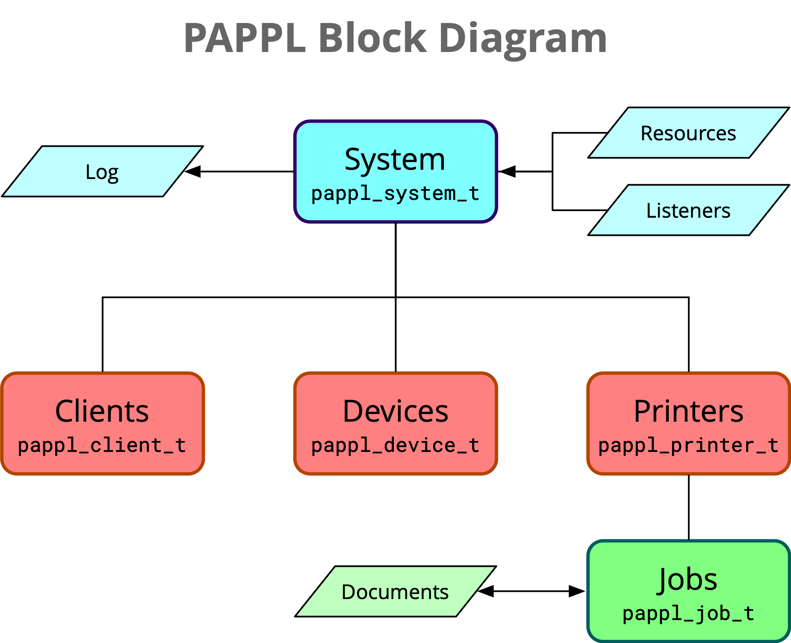

Michael R Sweet
Copyright © 2020-2023 by Michael R Sweet
PAPPL is a simple C-based framework/library for developing CUPS Printer Applications, which are the recommended replacement for printer drivers. It is sufficiently general purpose to support any kind of printer or driver that can be used on desktops, servers, and in embedded environments.
PAPPL embeds a multi-threaded HTTP / IPP Everywhere™ server and provides callbacks for a variety of events that allows a GUI or command-line application to interact with both the local user that is running the Printer Application and any network clients that are submitting print jobs, querying printer status and capabilities, and so forth.
PAPPL provides a simple driver interface for raster graphics printing, and developers of CUPS Raster drivers will readily adapt to it. PAPPL can also be used with printers that support vector graphics printing although you'll have to develop more code to support them. Drivers provide configuration and capability information to PAPPL, and PAPPL then calls the driver to print things as needed. PAPPL automatically supports printing of JPEG, PNG, PWG Raster, Apple Raster, and "raw" files to printers connected via USB and network (AppSocket/JetDirect) connections. Other formats can be supported through "filter" callbacks you register.
PAPPL is Copyright © 2019-2022 by Michael R Sweet and is licensed under the Apache License Version 2.0 with an (optional) exception to allow linking against GPL2/LGPL2 software (like older versions of CUPS), so it can be used freely in any project you'd like. See the files "LICENSE" and "NOTICE" in the source distribution for more information.
PAPPL requires Microsoft® Windows® 10 or higher or a POSIX-compliant host operating system such as Linux®, macOS®, QNX®, or VxWorks®. On Windows, the provided project files require Visual Studio 2019 or higher. For POSIX hosts, a "make" utility that supports the include directive (like GNU make), a C99-compatible C compiler such as GCC or Clang, and the "pkg-config" utility are required along with the following support libraries:
Avahi (0.8 or later) or mDNSResponder for mDNS/DNS-SD support
CUPS (2.2 or later) or libcups (3.0 or later) for the CUPS libraries
GNU TLS (3.0 or later), LibreSSL (3.0 or later), or OpenSSL (1.1 or later) for TLS support
JPEGLIB (8 or later) or libjpeg-turbo (2.0 or later) for JPEG image support (optional for B&W printers)
LIBPNG (1.6 or later) for PNG image support (optional)
LIBPAM for authentication support (optional)
LIBUSB (1.0 or later) for USB printing support (optional)
PAM for authentication support (optional)
ZLIB (1.1 or later) for compression support
CentOS 8/Fedora 23+/RHEL 8+:
sudo dnf groupinstall 'Development Tools'
sudo dnf install avahi-devel cups-devel libjpeg-turbo-devel \
libpng-devel libssl-devel libusbx-devel pam-devel zlib-devel
Debian/Raspbian/Ubuntu:
sudo apt-get install build-essential libavahi-client-dev libcups2-dev \
libcupsimage2-dev libjpeg-dev libpam-dev libpng-dev libssl-dev \
libusb-1.0-0-dev zlib1g-dev
macOS (after installing Xcode from the AppStore):
(install brew if necessary from <https://brew.sh>)
brew install libjpeg
brew install libpng
brew install libusb
brew install openssl@3
or download, build, and install libjpeg, libpng, libusb, and OpenSSL from source.
Windows (after installing Visual Studio 2019 or later) will automatically install the prerequisites via NuGet packages.
PAPPL uses the usual configure script to generate a make file:
./configure [options]
make
Use ./configure --help to see a full list of options.
There is also an Xcode project under the xcode directory that can be used on macOS:
open xcode/pappl.xcodeproj
and a Visual Studio solution under the vcnet directory that must be used on Windows.
You can test the build by running the PAPPL test program:
testsuite/testpappl
Once you have successfully built PAPPL, install it using:
sudo make install
By default everything will be installed under /usr/local. Use the --prefix configure option to override the base installation directory. Set the DESTDIR, DSTROOT, or RPM_BUILD_ROOT environment variables to redirect the installation to a staging area, as is typically done for most software packaging systems (using one of those environment variables...)
PAPPL can be detected using the pkg-config command, for example:
if pkg-config --exists pappl; then
...
fi
In a makefile you can add the necessary compiler and linker options with:
CFLAGS += `pkg-config --cflags pappl`
LIBS += `pkg-config --libs pappl`
PAPPL provides a top-level header file that should be used:
#include <pappl/pappl.h>
This header includes all of the base object headers in PAPPL as well as the CUPS header files that provide the HTTP and IPP support functions.
PAPPL provides five main objects:
The System (pappl_system_t): The main object that manages the whole printer application;
Clients (pappl_client_t): The objects that manage client connections;
Devices (pappl_device_t): The objects that manage printer connections;
Printers (pappl_printer_t): The objects that manage printers; and
Jobs (pappl_job_t): The objects that manage print jobs.

The system is an object of type pappl_system_t that manages client and device connections, listeners, the log, printers, and resources. It implements a subset of the IPP System Service (PWG 5100.22) with each printer implementing IPP Everywhere™ (PWG 5100.14) and some extensions to provide compatibility with the full range of mobile and desktop client devices. In addition, it provides an optional embedded web interface, raw socket printing, and USB printer gadget (Linux only).
A system object is created using the papplSystemCreate function and deleted using the papplSystemDelete function. Each system manages zero or more printers which can be accessed using either of the following functions:
papplSystemFindPrinter: Finds the named or numbered print queue, and
papplSystemIteratePrinters: Iterates all print queues managed by the system.
The papplSystemLoadState function is often used to load system values and printers from a prior run which used the papplSystemSaveState function.
IP and domain socket listeners are added using the papplSystemAddListeners function.
The papplSystemGet functions get various system values:
papplSystemGetAdminGroup: Gets the administrative group name,
papplSystemGetAuthService: Gets the PAM authorization service name,
papplSystemGetContact: Gets the contact information for the system,
papplSystemGetDefaultPrinterID: Gets the default printer's ID number,
papplSystemGetDefaultPrintGroup: Gets the default print group name,
papplSystemGetDNSSDName: Gets the system's DNS-SD service instance name,
papplSystemGetFooterHTML: Gets the HTML to use at the bottom of the web interface,
papplSystemGetGeoLocation: Gets the geographic location as a "geo:" URI,
papplSystemGetHostName: Gets the hostname for the system,
papplSystemGetHostPort: Gets the port number assigned to the system,
papplSystemGetLocation: Gets the human-readable location,
papplSystemGetLogLevel: Gets the current log level,
papplSystemGetMaxClients: Gets the maximum number of simultaneous network clients that are allowed,
papplSystemGetMaxLogSize: Gets the maximum log file size (when logging to a file),
papplSystemGetMaxSubscriptions: Gets the maximum number of event subscriptions that are allowed,
papplSystemGetName: Gets the name of the system that was passed to papplSystemCreate,
papplSystemGetNextPrinterID: Gets the ID number that will be used for the next printer that is created,
papplSystemGetOptions: Gets the system options that were passed to papplSystemCreate,
papplSystemGetOrganization: Gets the organization name,
papplSystemGetOrganizationalUnit: Gets the organizational unit name,
papplSystemGetPassword: Gets the web interface access password,
papplSystemGetServerHeader: Gets the HTTP "Server:" header value,
papplSystemGetSessionKey: Gets the current cryptographic session key,
papplSystemGetTLSOnly: Gets the "tlsonly" value that was passed to papplSystemCreate,
papplSystemGetUUID: Gets the UUID assigned to the system, and
papplSystemGetVersions: Gets the firmware version numbers that are reported to clients.
Similarly, the papplSystemSet functions set various system values:
papplSystemSetAdminGroup: Sets the administrative group name,
papplSystemSetContact: Sets the contact information for the system,
papplSystemSetDefaultPrinterID: Sets the ID number of the default printer,
papplSystemSetDefaultPrintGroup: Sets the default print group name,
papplSystemSetPrinterDrivers: Sets the list of printer drivers,
papplSystemSetDNSSDName: Sets the DNS-SD service instance name,
papplSystemSetFooterHTML: Sets the HTML to use at the bottom of the web interface,
papplSystemSetGeoLocation: Sets the geographic location of the system as a "geo:" URI,
papplSystemSetHostName: Sets the system hostname,
papplSystemSetLocation: Sets the human-readable location,
papplSystemSetLogLevel: Sets the current log level,
papplSystemSetMaxClients: Sets the maximum number of simultaneous network clients that are allowed,
papplSystemSetMaxLogSize: Sets the maximum log file size (when logging to a file),
papplSystemSetMaxSubscriptions: Sets the maximum number of event subscriptions that are allowed,
papplSystemSetMIMECallback: Sets a MIME media type detection callback,
papplSystemSetNextPrinterID: Sets the ID to use for the next printer that is created,
papplSystemSetOperationCallback: Sets an IPP operation callback,
papplSystemSetOrganization: Sets the organization name,
papplSystemSetOrganizationalUnit: Sets the organizational unit name,
papplSystemSetPassword: Sets the web interface access password,
papplSystemSetSaveCallback: Sets a save callback, usually papplSystemSaveState, that is used to save configuration and state changes as the system runs,
papplSystemSetUUID: Sets the UUID for the system, and
papplSystemSetVersions: Sets the firmware versions that are reported to clients,
The PAPPL logging functions record messages to the configured log file. The papplLog records messages applying to the system as a whole while papplLogClient, papplLogJob, and papplLogPrinter record messages specific to a client connection, print job, or printer respectively.
The "level" argument specifies a log level from debugging (PAPPL_LOGLEVEL_DEBUG) to fatal (PAPPL_LOGLEVEL_FATAL) and is used to determine whether the message is recorded to the log.
The "message" argument specifies the message using a printf format string.
Navigation links can be added to the web interface using the papplSystemAddLink function and removed using the papplSystemRemoveLink function.
PAPPL provides two functions to manage its run loops:
papplSystemRun: Runs a system object that you have created and configured, and
papplMainloop: Handles processing standard command-line arguments and sub-commands for a printer application.
You can learn more about the second function in the chapter on the HP Printer Application Example.
The system will run until it receives a Shutdown-System request, a termination signal, or you call the papplSystemShutdown function. You can test whether is system is running with the papplSystmeIsRunning function and whether it has been shut down with the papplSystemIsShutdown function.
PAPPL provides several functions for adding static and dynamic resources to the embedded HTTP server:
papplSystemAddResourceCallback: Adds a callback to serve dynamic content (HTTP GET or POST requests),
papplSystemAddResourceData: Adds a static resource using an unsigned char array,
papplSystemAddResourceDirectory: Adds static resource files from a directory,
papplSystemAddResourceFile: Adds a static resource file,
papplSystemAddResourceString: Adds a static resource using a constant string,
papplSystemAddStringsData: Adds a localization file from a constant string, and
papplSystemAddStringsFile: Adds a localization file from a file.
Resources may be removed using the papplSystemRemoveResource function.
Resources added using the papplSystemAddStringsData and papplSystemAddStringsFile functions are automatically used to localize the web interface and are provided to clients to localize printer-specific attributes and values.
PAPPL provides several additional localization functions that can be used to localize your own dynamic content and/or main loop sub-command:
papplClientGetLoc returns the collection of localization strings for the client's preferred language,
papplClientGetLocString returns a localized string for the client's preferred language,
papplLocFormatString formats a localized string from a given collection,
papplLocGetString returns a localized string from a given collection, and
papplSystemFindLoc finds the collection of localization strings for the specified language.
Key to these functions is the pappl_loc_t collection of localization strings, which combines the strings from the built-in PAPPL localizations and any strings file resources that have been added.
When localizing the web interface, PAPPL looks up strings for titles and labels passed to papplClientHTMLHeader, papplClientHTMLPrinterHeader, papplPrinterAddLink, and papplSystemAddLink, the footer HTML passed to papplSystemSetFooterHTML, string versions passed to papplSystemSetVersions, and attribute names and values for the "Printing Defaults" web pages. The key string for most localization strings is the English text, for example the title "Example Page" might be localized to French with the following line in the corresponding ".strings" file:
"Example Page" = "Exemple de Page";
Attribute names are localized using the IPP attribute name string, for example "smi32473-algorithm" might be localized as:
/* English strings file */
"smi32473-algorithm" = "Dithering Algorithm";
/* French strings file */
"smi32473-algorithm" = "Algorithme de Tramage";
Attribute values are localized by concatenating the attribute name with the enum (numeric) or keyword (string) values. For example, the values "ordered" and "contone" might be localized as:
/* English strings file */
"smi32473-algorithm.ordered" = "Patterned";
"smi32473-algorithm.contone" = "Continuous Tone";
/* French strings file */
"smi32473-algorithm.ordered" = "À Motifs";
"smi32473-algorithm.contone" = "Tonalité Continue";
Web pages can display a localized HTML banner for the resource path, for example:
/* English strings file */
"/" = "Example text for the root web page.";
"/network" = "<p>Example text for the <em>network</em> web page.</p>";
/* French strings file */
"/" = "Exemple de texte pour la page Web racine.";
"/network" = "<p>Exemple de texte pour la page Web du <em>réseau</em>.</p>";
The PAPPL client functions provide access to client connections. Client connections and the life cycle of the pappl_client_t objects are managed automatically by the system object for the printer application.
The papplClientGet functions get the current values for various client- supplied request data:
papplClientGetCSRFToken: Get the current CSRF token.
papplClientGetCookie: Get the value of a named cookie.
papplClientGetForm: Get form data from the client request.
papplClientGetHTTP: Get the HTTP connection associate with a client.
papplClientGetHostName: Get the host name used for the client request.
papplClientGetHostPort: Get the host port used for the client request.
papplClientGetJob: Get the job object associated with the client request.
papplClientGetLoc: Get the client's preferred localization.
papplClientGetLocString: Get a localized string using the client's preferred localization.
papplClientGetMethod: Get the HTTP request method.
papplClientGetOperation: Get the IPP operation code.
papplClientGetOptions: Get any options from the HTTP request URI.
papplClientGetPrinter: Get the printer object associated with the client request.
papplClientGetRequest: Get the IPP request.
papplClientGetResponse: Get the IPP response.
papplClientGetSystem: Get the system object associated with the client.
papplClientGetURI: Get the HTTP request URI.
papplClientGetUsername: Get the authenticated username, if any.
The papplClientRespond function starts a HTTP response to a client request. The papplClientHTMLHeader and papplClientHTMLFooter functions send standard HTML headers and footers for the printer application's configured web interface while the papplClientHTMLEscape, papplClientHTMLPrintf, papplClientHTMLPuts, and papplClientHTMLStartForm functions send HTML messages or strings. Use the papplClientGetHTTP and (CUPS) httpWrite2 functions to send arbitrary data in a client response. Cookies can be included in web browser requests using the papplClientSetCookie function.
The papplClientRespondIPP function starts an IPP response. Use the various CUPS ippAdd functions to add attributes to the response message.
The papplClientRespondRedirect function sends a redirection response to the client.
PAPPL provides the papplClientGetCSRFToken, papplClientGetForm, papplClientHTMLStartForm, and papplClientValidateForm functions to securely manage HTML forms.
The papplClientHTMLStartForm function starts a HTML form and inserts a hidden variable containing a CSRF token that was generated by PAPPL from a secure session key that is periodically updated. Upon receipt of a follow-up form submission request, the papplClientGetForm and papplClientValidateForm functions can be used to securely read the form data (including any file attachments) and validate the hidden CSRF token.
PAPPL supports both user-based authentication using PAM modules and a simple cookie-based password authentication mechanism that is used to limit administrative access through the web interface.
The papplHTMLAuthorize function authorizes access to the web interface and handles displaying an authentication form on the client's web browser. The return value indicates whether the client is authorized to access the web page.
The papplIsAuthorized function can be used to determine whether the current client is authorized to perform administrative operations and is normally only used for IPP clients. Local users are always authorized while remote users must provide credentials (typically a username and password) for access. This function will return an HTTP status code that can be provided to the httpClientSendResponse function. The value HTTP_STATUS_CONTINUE indicates that authorization is granted and the request should continue. The papplGetUsername function can be used to obtain the authenticated user identity.
The PAPPL device functions provide access to output device connections and to list available output devices. Output devices are accessed using Uniform Resource Identifier (URI) strings such as "file:///path/to/file-or-directory", "socket://11.22.33.44", and "usb://make/model?serial=number". The follow URI schemes are supported by PAPPL:
"dnssd": Network (AppSocket) printers discovered via DNS-SD/mDNS (Bonjour),
"file": Local files and directories,
"snmp": Network (AppSocket) printers discovered via SNMPv1,
"socket": Network (AppSocket) printers using a numeric IP address or hostname and optional port number, and
"usb": Local USB printer.
Custom device URI schemes can be registered using the papplDeviceAddScheme function.
The papplDeviceList function lists available output devices, providing each available output device to the supplied callback function. The list only contains devices whose URI scheme supports discovery, at present USB printers and network printers that advertise themselves using DNS-SD/mDNS and/or SNMPv1.
The papplDeviceOpen function opens a connection to an output device using its URI. The papplDeviceClose function closes the connection.
The papplDevicePrintf, papplDevicePuts, and papplDeviceWrite functions send data to the device, while the papplDeviceRead function reads data from the device.
The papplDeviceGet functions get various device values:
papplDeviceGetID: Gets the current IEEE-1284 device ID string,
papplDeviceGetMetrics: Gets statistical information about all communications with the device while it has been open, and
papplDeviceGetStatus: Gets the hardware status of a device mapped to the pappl_preason_t bitfield.
Printers are managed by the system and are represented by the pappl_printer_t type. Each printer is connected to a device and uses a driver to process document data and produce output. PAPPL supports raster printers out-of-the-box and provides filter callbacks to support other kinds of printers.
Printers are created using the papplPrinterCreate function and deleted using the papplPrinterDelete function. Each printer has zero or more jobs that are pending, processing (printing), or completed which can be access using any of the following functions:
papplPrinterFindJob: Finds the numbered print job,
papplPrinterIterateActiveJobs: Iterates active print jobs managed by the printer,
papplPrinterIterateAllJobs: Iterates all print jobs managed by the printer, and
papplPrinterIterateCompletedJobs: Iterates completed print jobs managed by the printer.
The papplPrinterGet functions get various printer values:
papplPrinterGetContact: Gets the contact information,
papplPrinterGetDeviceID: Gets the IEEE-1284 device ID,
papplPrinterGetDeviceURI: Gets the device URI,
papplPrinterGetDNSSDName: Gets the DNS-SD service instance name,
papplPrinterGetDriverAttributes: Gets the driver IPP attributes,
papplPrinterGetDriverData: Gets the driver data,
papplPrinterGetDriverName: Gets the driver name,
papplPrinterGetGeoLocation: Gets the geographic location as a "geo:" URI,
papplPrinterGetID: Gets the ID number,
papplPrinterGetImpressionsCompleted: Gets the number of impressions (sides) that have been printed,
papplPrinterGetLocation: Gets the human-readable location,
papplPrinterGetMaxActiveJobs: Gets the maximum number of simultaneous active (queued) jobs,
papplPrinterGetMaxCompletedJobs: Gets the maximum number of completed jobs for the job history,
papplPrinterGetMaxPreservedJobs: Gets the maximum number of preserved jobs (with document data) for the job history,
papplPrinterGetName: Gets the name,
papplPrinterGetNextJobID: Gets the ID number of the next job that is created,
papplPrinterGetNumberOfActiveJobs: Gets the current number of active jobs,
papplPrinterGetNumberOfCompletedJobs: Gets the current number of completed jobs in the job history,
papplPrinterGetNumberOfJobs: Gets the total number of jobs in memory,
papplPrinterGetOrganization: Gets the organization name,
papplPrinterGetOrganizationalUnit: Gets the organizational unit name,
papplPrinterGetPath: Gets the path of a printer web page,
papplPrinterGetPrintGroup: Gets the print authorization group name,
papplPrinterGetReasons: Gets the "printer-state-reasons" bitfield,
papplPrinterGetState: Gets the "printer-state" value,
papplPrinterGetSupplies: Gets the current supply levels, and
papplPrinterGetSystem: Gets the system managing the printer.
Similarly, the papplPrinterSet functions set those values:
papplPrinterSetContact: Sets the contact information,
papplPrinterSetDNSSDName: Sets the DNS-SD service instance name,
papplPrinterSetDriverData: Sets the driver data and attributes,
papplPrinterSetDriverDefaults: Sets the driver defaults,
papplPrinterSetGeoLocation: Sets the geographic location as a "geo:" URI,
papplPrinterSetImpressionsCompleted: Sets the number of impressions that have been printed,
papplPrinterSetLocation: Sets the human-readable location,
papplPrinterSetMaxActiveJobs: Sets the maximum number of jobs that can be queued,
papplPrinterSetMaxCompletedJobs: Sets the maximum number of completed jobs that are kept in the job history,
papplPrinterSetMaxPreservedJobs: Sets the maximum number of preserved jobs (with document data) that are kept in the job history,
papplPrinterSetNextJobID: Sets the ID number of the next job that is created,
papplPrinterSetOrganization: Sets the organization name,
papplPrinterSetOrganizationalUnit: Sets the organizational unit name,
papplPrinterSetPrintGroup: Sets the print authorization group name,
papplPrinterSetReadyMedia: Sets the ready (loaded) media,
papplPrinterSetReasons: Sets or clears "printer-state-reasons" values,
papplPrinterSetSupplies: Sets supply level information, and
papplPrinterSetUSB: Sets the USB vendor ID, product ID, and configuration options.
When necessary, the device associated with a printer can be opened with the papplPrinterOpenDevice function and subsequently closed using the papplPrinterCloseDevice function.
Printers are stopped using the papplPrinterPause function and started using the papplPrinterResume function. New jobs can be held using the papplPrinterHoldNewJobs function and later released for printing using the papplPrinterReleaseHeldNewJobs function.
Navigation links can be added to the web interface using the papplPrinterAddLink function and removed using the papplPrinterRemoveLink function.
Jobs are managed by the system and are represented by the pappl_job_t type. Jobs are created and deleted automatically by the system object for the printer application.
The papplJobGet functions get the current values associated with a job:
papplJobGetAttribute: Gets a named Job Template attribute,
papplJobGetData: Gets driver-specific processing data,
papplJobGetFilename: Gets the filename of the document data,
papplJobGetFormat: Gets the MIME media type for the document data,
papplJobGetID: Gets the job's numeric ID,
papplJobGetImpressions: Gets the number of impressions (sides) in the document,
papplJobGetImpressionsCompleted: Gets the number of impressions (sides) that have been printed,
papplJobGetMessage: Gets the current processing message (if any),
papplJobGetName: Gets the job name/title,
papplJobGetPrinter: Gets the printer for the job,
papplJobGetReasons: Gets the "job-state-reasons" bitfield,
papplJobGetState: Gets the "job-state" value,
papplJobGetTimeCompleted: Gets the UNIX time when the job completed, aborted, or was canceled,
papplJobGetTimeCreated: Gets the UNIX time when the job was created,
papplJobGetTimeProcessed: Gets the UNIX time when processing started, and
papplJobGetUsername: Gets the name of the user that created the job.
Similarly, the papplJobSet functions set the current values associated with a job:
papplJobSetData: Sets driver-specific processing data,
papplJobSetImpressions: Sets the number of impressions (sides) in the job,
papplJobSetImpressionsCompleted: Updates the number of impressions (sides) that have been completed,
papplJobSetMessage: Set the current processing message, and
papplJobSetReasons: Sets or clears bits in the "job-state-reasons" bitfield.
The papplJobCancel function cancels processing of a job while the papplJobIsCanceled function returns whether a job is in the canceled state (IPP_JSTATE_CANCELED) or is in the process of being canceled (IPP_JSTATE_PROCESSING and PAPPL_JREASON_PROCESSING_TO_STOP_POINT).
The papplJobHold function holds a job while the papplJobRelease function releases a job for printing.
PAPPL stores print options in pappl_pr_options_t objects. The papplJobCreatePrintOptions function creates a new print option object and initializes it using the job's attributes and printer defaults. The creator of a print options object must free it using the papplJobDeletePrintOptions function.
The papplJobOpenFile function opens a file associated with the job. The file descriptor must be closed by the caller using the close function. The primary document file for a job can be retrieved using the papplJobGetFilename function, and its format using the papplJobGetFormat function.
Filters allow a printer application to support different file formats. PAPPL includes raster filters for PWG and Apple raster documents (streamed) as well as JPEG and PNG image files. Filters for other formats or non-raster printers can be added using the papplSystemAddMIMEFilter function.
The papplJobFilterImage function converts raw image data to raster data suitable for the printer, and prints using the printer driver's raster callbacks. Raster filters that output a single page can use this function to handle the details of scaling, cropping, color space conversion, and dithering for raster printers. A raster filter that needs to print more than one image must use the raster callback functions in the pappl_pr_driver_data_t structure directly.
Filters that produce non-raster data can call the papplDevice functions to directly communicate with the printer in its native language.
This chapter will guide you through creating a simple PCL printer application based on the old CUPS "rastertohp" filter. The complete code can be found in the hp-printer-app project and serves as an overgrown "Hello, World!" program for PAPPL.
All printer applications require some sort of a main loop for processing IPP requests, printing files, and so forth. PAPPL provides the papplMainloop convenience function that provides a standard command-line interface, and in the "hp-printer-app" project the main function just calls papplMainloop to do all of the work:
int
main(int argc, char *argv[])
{
return (papplMainloop(argc, argv,
/*version*/"1.0",
/*footer_html*/NULL,
(int)(sizeof(pcl_drivers) / sizeof(pcl_drivers[0])),
pcl_drivers, pcl_callback, pcl_autoadd,
/*subcmd_name*/NULL, /*subcmd_cb*/NULL,
/*system_cb*/NULL,
/*usage_cb*/NULL,
/*data*/NULL));
}
As you can see, we pass in the command-line arguments, a version number ("1.0") for our printer application, a list of drivers supported by the printer application, a callback for the driver that will configure a printer for a named driver, and a callback for automatically adding printers.
The "footer_html" argument can be provided to override the default footer text that appears at the bottom of the web interface. In this case we are passing NULL to use the default.
The drivers list is a collection of names, descriptions, IEEE-1284 device IDs, and extension pointers. Ours looks like this for HP DeskJet, HP LaserJet, and a generic PCL driver:
static pappl_pr_driver_t pcl_drivers[] =// Driver information
{ /* name */ /* description */ /* device ID */ /* extension */
{ "hp_deskjet", "HP Deskjet", NULL, NULL },
{ "hp_generic", "Generic PCL", "CMD:PCL;", NULL },
{ "hp_laserjet", "HP LaserJet", NULL, NULL }
};
The driver callback is responsible for providing the data associated with each driver, while the auto-add callback tells PAPPL which driver to use for the printers it finds.
The "subcmd_name" and "subcmd_cb" arguments specify a custom sub-command for the printer application along with a function to call. Since this printer application does not have a custom sub-command, we pass NULL for both.
The "system_cb" argument specifies a callback for creating the system object. We pass NULL because we want the default system object for this printer application, which supports multiple printers and a web interface.
The "usage_cb" argument specifies a callback from displaying the program usage message. Passing NULL yields the default usage message.
The "data" argument specifies a pointer that will be passed to any of the callback functions. We pass NULL since we do not have any extra contextual information to provide to the callbacks.
The papplMainloop function runs until all processing for the current sub-command is complete, returning the exit status for the program.
The PAPPL driver callback is called when the system is creating a new printer object. It receives pointers to the system, driver name, device URI, a driver data structure, an IPP attributes pointer, and the callback data, and it returns a boolean indicating whether the driver callback was successful:
typedef bool (*pappl_pr_driver_cb_t)(pappl_system_t *system,
const char *driver_name, const char *device_uri,
pappl_pr_driver_data_t *driver_data, ipp_t **driver_attrs, void *data);
A driver callback can communicate with the printer via its device URI as needed to configure the driver, however our printer application doesn't need to do that.
The first thing our pcl_callback function does is to set the printer callbacks in the driver data structure:
driver_data->printfile_cb = pcl_print;
driver_data->rendjob_cb = pcl_rendjob;
driver_data->rendpage_cb = pcl_rendpage;
driver_data->rstartjob_cb = pcl_rstartjob;
driver_data->rstartpage_cb = pcl_rstartpage;
driver_data->rwriteline_cb = pcl_rwriteline;
driver_data->status_cb = pcl_status;
The pcl_print function prints a raw PCL file while the pcl_r functions print raster graphics. The pcl_status updates the printer status.
Next is the printer's native print format as a MIME media type, in this case HP PCL:
driver_data->format = "application/vnd.hp-pcl";
The default orientation and print quality follow:
driver_data->orient_default = IPP_ORIENT_NONE;
driver_data->quality_default = IPP_QUALITY_NORMAL;
Then the values for the various drivers. Here are the HP DeskJet driver settings:
if (!strcmp(driver_name, "hp_deskjet"))
{
/* Make and model name */
strncpy(driver_data->make_and_model, "HP DeskJet", sizeof(driver_data->make_and_model) - 1);
/* Pages-per-minute for monochrome and color */
driver_data->ppm = 8;
driver_data->ppm_color = 2;
/* Three resolutions - 150dpi, 300dpi (default), and 600dpi */
driver_data->num_resolution = 3;
driver_data->x_resolution[0] = 150;
driver_data->y_resolution[0] = 150;
driver_data->x_resolution[1] = 300;
driver_data->y_resolution[1] = 300;
driver_data->x_resolution[2] = 600;
driver_data->y_resolution[2] = 600;
driver_data->x_default = driver_data->y_default = 300;
/* Four color spaces - black (1-bit and 8-bit), grayscale, and sRGB */
driver_data->raster_types = PAPPL_PWG_RASTER_TYPE_BLACK_1 | PAPPL_PWG_RASTER_TYPE_BLACK_8 | PAPPL_PWG_RASTER_TYPE_SGRAY_8 | PAPPL_PWG_RASTER_TYPE_SRGB_8;
/* Color modes: auto (default), monochrome, and color */
driver_data->color_supported = PAPPL_COLOR_MODE_AUTO | PAPPL_COLOR_MODE_AUTO_MONOCHROME | PAPPL_COLOR_MODE_COLOR | PAPPL_COLOR_MODE_MONOCHROME;
driver_data->color_default = PAPPL_COLOR_MODE_AUTO;
/* Media sizes with 1/4" left/right and 1/2" top/bottom margins*/
driver_data->num_media = (int)(sizeof(pcl_hp_deskjet_media) / sizeof(pcl_hp_deskjet_media[0]));
memcpy(driver_data->media, pcl_hp_deskjet_media, sizeof(pcl_hp_deskjet_media));
driver_data->left_right = 635; // 1/4" left and right
driver_data->bottom_top = 1270; // 1/2" top and bottom
/* 1-sided printing only */
driver_data->sides_supported = PAPPL_SIDES_ONE_SIDED;
driver_data->sides_default = PAPPL_SIDES_ONE_SIDED;
/* Three paper trays (MSN names) */
driver_data->num_source = 3;
driver_data->source[0] = "tray-1";
driver_data->source[1] = "manual";
driver_data->source[2] = "envelope";
/* Five media types (MSN names) */
driver_data->num_type = 5;
driver_data->type[0] = "stationery";
driver_data->type[1] = "bond";
driver_data->type[2] = "special";
driver_data->type[3] = "transparency";
driver_data->type[4] = "photographic-glossy";
}
Finally, we fill out the ready and default media for each media source (tray), putting US Letter paper in the regular trays and #10 envelopes in any envelope tray:
// Fill out ready and default media (default == ready media from the first source)
for (i = 0; i < driver_data->num_source; i ++)
{
pwg_media_t *pwg; /* Media size information */
/* Use US Letter for regular trays, #10 envelope for the envelope tray */
if (!strcmp(driver_data->source[i], "envelope"))
strncpy(driver_data->media_ready[i].size_name, "env_10_4.125x9.5in", sizeof(driver_data->media_ready[i].size_name) - 1);
else
strncpy(driver_data->media_ready[i].size_name, "na_letter_8.5x11in", sizeof(driver_data->media_ready[i].size_name) - 1);
/* Set margin and size information */
if ((pwg = pwgMediaForPWG(driver_data->media_ready[i].size_name)) != NULL)
{
driver_data->media_ready[i].bottom_margin = driver_data->bottom_top;
driver_data->media_ready[i].left_margin = driver_data->left_right;
driver_data->media_ready[i].right_margin = driver_data->left_right;
driver_data->media_ready[i].size_width = pwg->width;
driver_data->media_ready[i].size_length = pwg->length;
driver_data->media_ready[i].top_margin = driver_data->bottom_top;
strncpy(driver_data->media_ready[i].source, driver_data->source[i], sizeof(driver_data->media_ready[i].source) - 1);
strncpy(driver_data->media_ready[i].type, driver_data->type[0], sizeof(driver_data->media_ready[i].type) - 1);
}
}
driver_data->media_default = driver_data->media_ready[0];
return (true);
The PAPPL auto-add callback is called when processing the "autoadd" sub-command. It is called for each new device and is responsible for returning the name of the driver to be used for the device or NULL if no driver is available:
typedef const char *(*pappl_ml_autoadd_cb_t)(const char *device_info,
const char *device_uri, const char *device_id, void *data);
Our pcl_autoadd function uses the IEEE-1284 device ID string to determine whether one of the drivers will work. The papplDeviceParseID function splits the string into key/value pairs that can be looked up using the cupsGetOption function:
const char *ret = NULL; // Return value
int num_did; // Number of device ID key/value pairs
cups_option_t *did; // Device ID key/value pairs
const char *cmd, // Command set value
*pcl; // PCL command set pointer
// Parse the IEEE-1284 device ID to see if this is a printer we support...
num_did = papplDeviceParseID(device_id, &did);
The two keys we care about are the "COMMAND SET" (also abbreviated as "CMD") for the list of document formats the printer supports and "MODEL"/"MDL" for the model name. We are looking for the "PCL" format and one of the common model names for HP printers:
// Look at the COMMAND SET (CMD) key for the list of printer languages,,,
if ((cmd = cupsGetOption("COMMAND SET", num_did, did)) == NULL)
cmd = cupsGetOption("CMD", num_did, did);
if (cmd && (pcl = strstr(cmd, "PCL")) != NULL && (pcl[3] == ',' || !pcl[3]))
{
// Printer supports HP PCL, now look at the MODEL (MDL) string to see if
// it is one of the HP models or a generic PCL printer...
const char *mdl; // Model name string
if ((mdl = cupsGetOption("MODEL", num_did, did)) == NULL)
mdl = cupsGetOption("MDL", num_did, did);
if (mdl && (strstr(mdl, "DeskJet") || strstr(mdl, "Photosmart")))
ret = "hp_deskjet"; // HP DeskJet/Photosmart printer
else if (mdl && strstr(mdl, "LaserJet"))
ret = "hp_laserjet"; // HP LaserJet printer
else
ret = "hp_generic"; // Some other PCL laser printer
}
cupsFreeOptions(num_did, did);
return (ret);
The file printing callback is used when printing a "raw" (printer-ready) file from a client:
typedef bool (*pappl_pr_printfile_cb_t)(pappl_job_t *job,
pappl_pr_options_t *options, pappl_device_t *device);
This callback will sometimes send some printer initialization commands followed by the job file and then any cleanup commands. It may also be able to count the number of pages (impressions) in the file, although that is not a requirement. For the HP Printer Application our pcl_print function just copies the file from the job to the device and assumes that the file contains only one page:
int fd; // Job file
ssize_t bytes; // Bytes read/written
char buffer[65536]; // Read/write buffer
papplJobSetImpressions(job, 1);
fd = open(papplJobGetFilename(job), O_RDONLY);
while ((bytes = read(fd, buffer, sizeof(buffer))) > 0)
{
if (papplDeviceWrite(device, buffer, (size_t)bytes) < 0)
{
papplLogJob(job, PAPPL_LOGLEVEL_ERROR,
"Unable to send %d bytes to printer.", (int)bytes);
close(fd);
return (false);
}
}
close(fd);
papplJobSetImpressionsCompleted(job, 1);
return (true);
The PAPPL raster printing callbacks are used for printing PWG and Apple raster documents, JPEG and PNG images, and other formats that end up as raster data:
typedef bool (*pappl_pr_rstartjob_cb_t)(pappl_job_t *job,
pappl_pr_options_t *options, pappl_device_t *device);
typedef bool (*pappl_pr_rstartpage_cb_t)(pappl_job_t *job,
pappl_pr_options_t *options, pappl_device_t *device, unsigned page);
typedef bool (*pappl_pr_rwriteline_cb_t)(pappl_job_t *job,
pappl_pr_options_t *options, pappl_device_t *device, unsigned y,
const unsigned char *line);
typedef bool (*pappl_pr_rendpage_cb_t)(pappl_job_t *job,
pappl_pr_options_t *options, pappl_device_t *device, unsigned page);
typedef bool (*pappl_pr_rendjob_cb_t)(pappl_job_t *job,
pappl_pr_options_t *options, pappl_device_t *device);
Each of the raster printing callbacks is expected to send data to the printer using the provided "device" pointer. The "job" argument provides the current job object and the "options" pointer provides the current print job options. The "page" argument specifies the current page number staring at 0.
The pappl_pr_rstartjob_cb_t function is called at the beginning of a job to allow the driver to initialize the printer for the current job.
The pappl_pr_rstartpage_cb_t function is called at the beginning of each page to allow the driver to do any per-page initialization and/or memory allocations and send any printer commands that are necessary to start a new page.
The pappl_pr_rwriteline_cb_t function is called for each raster line on the page and is typically responsible for dithering and compressing the raster data for the printer.
The pappl_pr_rendpage_cb_t function is called at the end of each page where the driver will typically eject the current page.
The pappl_pr_rendjob_cb_t function is called at the end of a job to allow the driver to send any cleanup commands to the printer.
The PAPPL identification callback is used to audibly or visibly identify the printer being used:
typedef void (*pappl_pr_identify_cb_t)(pappl_printer_t *printer,
pappl_identify_actions_t actions, const char *message);
The most common identification method is PAPPL_IDENTIFY_ACTIONS_SOUND which should have the printer make a sound. The PAPPL_IDENTIFY_ACTIONS_DISPLAY and PAPPL_IDENTIFY_ACTIONS_SPEAK methods use the "message" argument to display or speak a message. Finally, the PAPPL_IDENTIFY_ACTIONS_FLASH method flashes a light on the printer.
The HP Printer Application does not have an identification callback since most PCL printers lack a buzzer or light that can be remotely activated.
Note: IPP Everywhere™ requires all printers to support identification. A warning message is logged by PAPPL whenever a driver does not set the
identify_cbmember of the printer driver data structure.
The PAPPL status callback is used to update the printer state, supply levels, and/or ready media for the printer:
typedef bool (*pappl_pr_status_cb_t)(pappl_printer_t *printer);
The callback can open a connection to the printer using the papplPrinterOpenDevice function.
The PAPPL self-test page callback is used to generate a self-test page for the printer:
typedef const char *(*pappl_printer_testpage_cb_t)(pappl_printer_t *printer,
char *buffer, size_t bufsize);
When the callback returns a filename (copied to the specified buffer), that file will be queued as a job for the printer. The callback can also try opening the device using the papplPrinterOpenDevice function to send a printer self-test command instead - in this case the callback must return NULL to indicate there is no file to be printed.
Resume processing of a job.
void pappJobResume(pappl_job_t *job, pappl_jreason_t remove);
| job | Job |
|---|---|
| remove | Reasons to remove from "job-state-reasons" |
Temporarily stop processing of a job.
void pappJobSuspend(pappl_job_t *job, pappl_jreason_t add);
| job | Job |
|---|---|
| add | Reasons to add to "job-state-reasons" |
Get a unique Cross-Site Request Forgery token string.
char *papplClientGetCSRFToken(pappl_client_t *client, char *buffer, size_t bufsize);
| client | Client |
|---|---|
| buffer | String buffer |
| bufsize | Size of string buffer |
Token string
This function generates and returns a unique Cross-Site Request Forgery
token string to be used as the value of a hidden variable in all HTML forms
sent in the response and then compared when validating the form data in the
subsequent request.
The value is based on the current system session key and client address in
order to make replay attacks infeasible.
Note: ThepapplClientHTMLStartFormfunction automatically adds the hidden CSRF variable, and thepapplClientIsValidFormfunction validates the value.
Get a cookie from the client.
char *papplClientGetCookie(pappl_client_t *client, const char *name, char *buffer, size_t bufsize);
| client | Client |
|---|---|
| name | Name of cookie |
| buffer | Value buffer |
| bufsize | Size of value buffer |
Cookie value or NULL if not set
This function gets a HTTP "cookie" value from the client request. NULL
is returned if no cookie has been set by a prior request, or if the user has
disabled or removed the cookie.
Use the papplClientSetCookie function to set a cookie in a response
to a request.
Note: Cookies set with papplClientSetCookie will not be available to
this function until the following request.
Get form data from the web client.
int papplClientGetForm(pappl_client_t *client, cups_option_t **form);
| client | Client |
|---|---|
| form | Form variables |
Number of form variables read
For HTTP GET requests, the form data is collected from the request URI. For
HTTP POST requests, the form data is read from the client.
The returned form values must be freed using the cupsFreeOptions
function.
Note: Because the form data is read from the client connection, this function can only be called once per request.
Get the HTTP connection associated with a client object.
http_t *papplClientGetHTTP(pappl_client_t *client);
| client | Client |
|---|
HTTP connection
This function returns the HTTP connection associated with the client and is
used when sending response data directly to the client using the CUPS
httpXxx functions.
Get the hostname from the client-supplied Host: field.
const char *papplClientGetHostName(pappl_client_t *client);
| client | Client |
|---|
Hostname or NULL for none
This function returns the hostname that was used in the request and should be used in any URLs or URIs that you generate.
Get the port from the client-supplied Host: field.
int papplClientGetHostPort(pappl_client_t *client);
| client | Client |
|---|
Port number or 0 for none
This function returns the port number that was used in the request and should be used in any URLs or URIs that you generate.
Get the target job for an IPP request.
pappl_job_t *papplClientGetJob(pappl_client_t *client);
| client | Client |
|---|
Target job or NULL if none
This function returns the job associated with the current IPP request.
NULL is returned if the request does not target a job.
Get the localization data for a client connection.
pappl_loc_t *papplClientGetLoc(pappl_client_t *client);
| client | Client |
|---|
Localization data to use
Get a localized string for the client.
const char *papplClientGetLocString(pappl_client_t *client, const char *s);
| client | Client |
|---|---|
| s | String to localize |
Localized string
Get the HTTP request method.
http_state_t papplClientGetMethod(pappl_client_t *client);
| client | Client |
|---|
HTTP method
This function returns the HTTP request method that was used, for example
HTTP_STATE_GET for a GET request or HTTP_STATE_POST for a POST request.
Get the IPP operation code.
ipp_op_t papplClientGetOperation(pappl_client_t *client);
| client | Client |
|---|
IPP operation code
This function returns the IPP operation code associated with the current IPP request.
Get the options from the request URI.
const char *papplClientGetOptions(pappl_client_t *client);
| client | Client |
|---|
Options or NULL if none
This function returns any options that were passed in the HTTP request URI.
The options are the characters after the "?" character, for example a
request URI of "/mypage?name=value" will have an options string of
"name=value".
NULL is returned if the request URI did not contain any options.
Note: HTTP GET form variables are normally accessed using the
papplClientGetForm function. This function should only be used when
getting non-form data.
Get the target printer for an IPP request.
pappl_printer_t *papplClientGetPrinter(pappl_client_t *client);
| client | Client |
|---|
Target printer or NULL if none
This function returns the printer associated with the current IPP request.
NULL is returned if the request does not target a printer.
Get the IPP request message.
ipp_t *papplClientGetRequest(pappl_client_t *client);
| client | Client |
|---|
IPP request message
This function returns the attributes in the current IPP request, for use
with the CUPS ippFindAttribute, ippFindNextAttribute,
ippFirstAttribute, and ippNextAttribute functions.
Get the IPP response message.
ipp_t *papplClientGetResponse(pappl_client_t *client);
| client | Client |
|---|
IPP response message
This function returns the attributes in the current IPP response, for use
with the CUPS ippAddXxx and ippSetXxx functions. Use the
papplClientRespondIPP function to set the status code and message,
if any.
Get the containing system for the client.
pappl_system_t *papplClientGetSystem(pappl_client_t *client);
| client | Client |
|---|
System
This function returns the system object that contains the client.
Get the HTTP request URI.
const char *papplClientGetURI(pappl_client_t *client);
| client | Client |
|---|
Request URI
This function returns the URI that was sent in the current HTTP request.
Note: Any options in the URI are removed and can be accessed separately
using the papplClientGetOptions function.
Get the authenticated username, if any.
const char *papplClientGetUsername(pappl_client_t *client);
| client | Client |
|---|
Authenticated username or NULL if none
This function returns the current authenticated username, if any.
Handle authorization for the web interface.
bool papplClientHTMLAuthorize(pappl_client_t *client);
| client | Client |
|---|
true if authorized, false otherwise
The web interface supports both authentication against user accounts and
authentication using a single administrative access password. This function
handles the details of authentication for the web interface based on the
system authentication service configuration = the "auth_service" argument to
papplSystemCreate and any callback set using
papplSystemSetAuthCallback.
Note: IPP operation callbacks needing to perform authorization should use
the papplClientIsAuthorized function instead.
Send a string to a web browser client.
void papplClientHTMLEscape(pappl_client_t *client, const char *s, size_t slen);
| client | Client |
|---|---|
| s | String to write |
| slen | Number of characters to write (0 for nul-terminated) |
This function sends the specified string to the web browser client and
escapes special characters as HTML entities as needed, for example "&" is
sent as &.
Show the web interface footer.
void papplClientHTMLFooter(pappl_client_t *client);
| client | Client |
|---|
This function sends the standard web interface footer followed by a
trailing 0-length chunk to finish the current HTTP response. Use the
papplSystemSetFooterHTML function to add any custom HTML needed in
the footer.
Show the web interface header and title.
void papplClientHTMLHeader(pappl_client_t *client, const char *title, int refresh);
| client | Client |
|---|---|
| title | Title |
| refresh | Refresh time in seconds (0 for no refresh) |
This function sends the standard web interface header and title. If the
"refresh" argument is greater than zero, the page will automatically reload
after that many seconds.
Use the papplSystemAddLink function to add system-wide navigation
links to the header. Similarly, use papplPrinterAddLink to add
printer-specific links, which will appear in the web interface printer if
the system is not configured to support multiple printers
(the PAPPL_SOPTIONS_MULTI_QUEUE option to papplSystemCreate).
Show the web interface footer for printers.
void papplClientHTMLPrinterFooter(pappl_client_t *client);
| client | Client |
|---|
This function sends the standard web interface footer for a printer followed
by a trailing 0-length chunk to finish the current HTTP response. Use the
papplSystemSetFooterHTML function to add any custom HTML needed in
the footer.
Show the web interface header and title for printers.
void papplClientHTMLPrinterHeader(pappl_client_t *client, pappl_printer_t *printer, const char *title, int refresh, const char *label, const char *path_or_url);
| client | Client |
|---|---|
| printer | Printer |
| title | Title |
| refresh | Refresh time in seconds or 0 for none |
| label | Button label or NULL for none |
| path_or_url | Button path or NULL for none |
This function sends the standard web interface header and title for a
printer. If the "refresh" argument is greater than zero, the page will
automatically reload after that many seconds.
If "label" and "path_or_url" are non-NULL strings, an additional navigation
link is included with the title header - this is typically used for an
action button ("Change").
Use the papplSystemAddLink function to add system-wide navigation
links to the header. Similarly, use papplPrinterAddLink to add
printer-specific links, which will appear in the web interface printer if
the system is not configured to support multiple printers
(the PAPPL_SOPTIONS_MULTI_QUEUE option to papplSystemCreate).
Send formatted text to the web browser client, escaping as needed.
void papplClientHTMLPrintf(pappl_client_t *client, const char *format, ...);
| client | Client |
|---|---|
| format | Printf-style format string |
| ... | Additional arguments as needed |
This function sends formatted text to the web browser client using
printf-style formatting codes. The format string itself is not escaped
to allow for embedded HTML, however strings inserted using the '%c' or %s
codes are escaped properly for HTML - "&" is sent as &, etc.
Send a HTML string to the web browser client.
void papplClientHTMLPuts(pappl_client_t *client, const char *s);
| client | Client |
|---|---|
| s | String |
This function sends a HTML string to the client without performing any escaping of special characters.
Start a HTML form.
void papplClientHTMLStartForm(pappl_client_t *client, const char *action, bool multipart);
| client | Client |
|---|---|
| action | Form action URL |
| multipart | true if the form allows file uploads, false otherwise |
This function starts a HTML form with the specified "action" path and
includes the CSRF token as a hidden variable. If the "multipart" argument
is true, the form is annotated to support file attachments up to 2MiB in
size.
Determine whether a client is authorized for administrative requests.
http_status_t papplClientIsAuthorized(pappl_client_t *client);
| client | Client |
|---|
HTTP status
This function determines whether a client is authorized to submit an
administrative request.
The return value is HTTP_STATUS_CONTINUE if access is authorized,
HTTP_STATUS_FORBIDDEN if access is not allowed, HTTP_STATUS_UNAUTHORIZED
if authorization is required, or HTTP_STATUS_UPGRADE_REQUIRED if the
connection needs to be encrypted. All of these values can be passed to the
papplClientRespond function.
Return whether a Client connection is encrypted.
bool papplClientIsEncrypted(pappl_client_t *client);
| client | Client |
|---|
true if encrypted, false otherwise
This function returns a boolean value indicating whether a Client connection is encrypted with TLS.
Validate HTML form variables.
bool papplClientIsValidForm(pappl_client_t *client, int num_form, cups_option_t *form);
| client | Client |
|---|---|
| num_form | Number of form variables |
| form | Form variables |
true if the CSRF token is valid, false otherwise
This function validates the contents of a HTML form using the CSRF token
included as a hidden variable. When sending a HTML form you should use the
papplClientStartForm function to start the HTML form and insert the
CSRF token for later validation.
Note: Callers are expected to validate all other form variables.
Send a regular HTTP response.
bool papplClientRespond(pappl_client_t *client, http_status_t code, const char *content_encoding, const char *type, time_t last_modified, size_t length);
| client | Client |
|---|---|
| code | HTTP status of response |
| content_encoding | Content-Encoding of response |
| type | MIME media type of response |
| last_modified | Last-Modified date/time or 0 for none |
| length | Length of response or 0 for variable-length |
true on success, false on failure
This function sends all of the required HTTP fields and includes standard messages for errors. The following values for "code" are explicitly supported:
HTTP_STATUS_OK: The request is successful.
HTTP_STATUS_BAD_REQUEST: The client submitted a bad request.
HTTP_STATUS_CONTINUE: An authentication challenge is not needed.
HTTP_STATUS_FORBIDDEN: Authenticated but not allowed.
HTTP_STATUS_METHOD_NOT_ALLOWED: The HTTP method is not supported for the
given URI.
HTTP_STATUS_UNAUTHORIZED: Not authenticated.
HTTP_STATUS_UPGRADE_REQUIRED: Redirects the client to a secure page.Use the papplClientRespondRedirect when you need to redirect the
client to another page.
Send an IPP response.
ipp_t *papplClientRespondIPP(pappl_client_t *client, ipp_status_t status, const char *message, ...);
| client | Client |
|---|---|
| status | status-code |
| message | printf-style status-message |
| ... | Additional args as needed |
IPP response message
This function sets the return status for an IPP request and returns the
current IPP response message. The "status" and "message" arguments replace
any existing status-code and "status-message" attribute value that may be
already present in the response.
Note: You should call this function prior to adding any response attributes.
Respond with an unsupported IPP attribute.
void papplClientRespondIPPUnsupported(pappl_client_t *client, ipp_attribute_t *attr);
| client | Client |
|---|---|
| attr | Atribute |
This function returns a 'client-error-attributes-or-values-not-supported' status code and adds the specified attribute to the unsupported attributes group in the response.
Respond with a redirect to another page.
bool papplClientRespondRedirect(pappl_client_t *client, http_status_t code, const char *path);
| client | Client |
|---|---|
| code | HTTP_STATUS_MOVED_PERMANENTLY or HTTP_STATUS_FOUND |
| path | Redirection path/URL |
true on success, false otherwise
This function sends a HTTP response that redirects the client to another
page or URL. The most common "code" value to return is HTTP_STATUS_FOUND.
Set a cookie for the web browser client.
void papplClientSetCookie(pappl_client_t *client, const char *name, const char *value, int expires);
| client | Client |
|---|---|
| name | Cookie name |
| value | Cookie value |
| expires | Expiration in seconds from now, 0 for a session cookie |
This function sets the value of a cookie for the client by updating the
Set-Cookie header in the HTTP response that will be sent. The "name" and
"value" strings must contain only valid characters for a cookie and its
value as documented in RFC 6265, which basically means letters, numbers, "@",
"-", ".", and "_".
The "expires" argument specifies how long the cookie will remain active in
seconds, for example 3600 seconds is one hour and 86400 seconds is one
day. If the value is zero or less, a "session" cookie is created instead
which will expire as soon as the web browser is closed.
Set the authenticated username, if any.
void papplClientSetUsername(pappl_client_t *client, const char *username);
| client | Client |
|---|---|
| username | Username or NULL for none |
This function sets the current authenticated username, if any.
size_t papplCopyString(char *dst, const char *src, size_t dstsize);
| dst | Destination buffer |
|---|---|
| src | Source string |
| dstsize | Destination size |
Safely copy a C string.
This function safely copies a C string to a destination buffer.
Create a temporary file.
int papplCreateTempFile(char *fname, size_t fnamesize, const char *prefix, const char *ext);
| fname | Filename buffer |
|---|---|
| fnamesize | Size of filename buffer |
| prefix | Prefix for filename |
| ext | Filename extension, if any |
File descriptor or -1 on error
Add a device URI scheme.
void papplDeviceAddScheme(const char *scheme, pappl_devtype_t dtype, pappl_devlist_cb_t list_cb, pappl_devopen_cb_t open_cb, pappl_devclose_cb_t close_cb, pappl_devread_cb_t read_cb, pappl_devwrite_cb_t write_cb, pappl_devstatus_cb_t status_cb, pappl_devid_cb_t id_cb);
| scheme | URI scheme |
|---|---|
| dtype | Device type (PAPPL_DEVTYPE_CUSTOM_LOCAL or PAPPL_DEVTYPE_CUSTOM_NETWORK) |
| list_cb | List devices callback, if any |
| open_cb | Open callback |
| close_cb | Close callback |
| read_cb | Read callback |
| write_cb | Write callback |
| status_cb | Status callback, if any |
| id_cb | IEEE-1284 device ID callback, if any |
This function registers a device URI scheme with PAPPL, so that devices using the named scheme can receive print data, report status information, and so forth. PAPPL includes support for the following URI schemes:
dnssd: Network printers discovered using DNS-SD.
file: Character device files, plain files, and directories.
snmp: Network printers discovered using SNMPv1.
socket: Network printers using a hostname or numeric IP address.
usb: Class 1 (unidirectional) or 2 (bidirectional) USB printers.The "scheme" parameter specifies the URI scheme and must consist of lowercase
letters, digits, "-", "_", and/or ".", for example "x-foo" or
"com.example.bar".
The "dtype" parameter specifies the device type and should be
PAPPL_DTYPE_CUSTOM_LOCAL for locally connected printers and
PAPPL_DTYPE_CUSTOM_NETWORK for network printers.
Each of the callbacks corresponds to one of the papplDevice functions:
The "open_cb" callback typically calls papplDeviceSetData to store a
pointer to contextual information for the connection while the "close_cb",
"id_cb", "read_cb", "write_cb", and "status_cb" callbacks typically call
papplDeviceGetData to retrieve it.
Add a device URI scheme with supply-level queries.
void papplDeviceAddScheme2(const char *scheme, pappl_devtype_t dtype, pappl_devlist_cb_t list_cb, pappl_devopen_cb_t open_cb, pappl_devclose_cb_t close_cb, pappl_devread_cb_t read_cb, pappl_devwrite_cb_t write_cb, pappl_devstatus_cb_t status_cb, pappl_devsupplies_cb_t supplies_cb, pappl_devid_cb_t id_cb);
| scheme | URI scheme |
|---|---|
| dtype | Device type (PAPPL_DEVTYPE_CUSTOM_LOCAL or PAPPL_DEVTYPE_CUSTOM_NETWORK) |
| list_cb | List devices callback, if any |
| open_cb | Open callback |
| close_cb | Close callback |
| read_cb | Read callback |
| write_cb | Write callback |
| status_cb | Status callback, if any |
| supplies_cb | Supply level callback, if any |
| id_cb | IEEE-1284 device ID callback, if any |
This function registers a device URI scheme with PAPPL, so that devices using the named scheme can receive print data, report status information, and so forth. PAPPL includes support for the following URI schemes:
dnssd: Network printers discovered using DNS-SD.
file: Character device files, plain files, and directories.
snmp: Network printers discovered using SNMPv1.
socket: Network printers using a hostname or numeric IP address.
usb: Class 1 (unidirectional) or 2 (bidirectional) USB printers.The "scheme" parameter specifies the URI scheme and must consist of lowercase
letters, digits, "-", "_", and/or ".", for example "x-foo" or
"com.example.bar".
The "dtype" parameter specifies the device type and should be
PAPPL_DTYPE_CUSTOM_LOCAL for locally connected printers and
PAPPL_DTYPE_CUSTOM_NETWORK for network printers.
Each of the callbacks corresponds to one of the papplDevice functions:
The "open_cb" callback typically calls papplDeviceSetData to store a
pointer to contextual information for the connection while the "close_cb",
"id_cb", "read_cb", "write_cb", "status_cb", and "supplies_cb" callbacks
typically call papplDeviceGetData to retrieve it.
Close a device connection.
void papplDeviceClose(pappl_device_t *device);
| device | Device to close |
|---|
This function flushes any pending write data and closes the connection to a device.
Report an error on a device.
void papplDeviceError(pappl_device_t *device, const char *message, ...);
| device | Device |
|---|---|
| message | Printf-style error message |
| ... | Additional arguments as needed |
This function reports an error on a device using the client-supplied callback function. It is normally called from any custom device URI scheme callbacks you implement.
Flush any buffered data to the device.
void papplDeviceFlush(pappl_device_t *device);
| device | Device |
|---|
This function flushes any pending write data sent using the
papplDevicePrintf, papplDevicePuts, or papplDeviceWrite
functions to the device.
Get device-specific data.
void *papplDeviceGetData(pappl_device_t *device);
| device | Device |
|---|
Device data pointer
This function returns any device-specific data that has been set by the device open callback. It is normally only called from any custom device URI scheme callbacks you implement.
Get the IEEE-1284 device ID.
char *papplDeviceGetID(pappl_device_t *device, char *buffer, size_t bufsize);
| device | Device |
|---|---|
| buffer | Buffer for IEEE-1284 device ID |
| bufsize | Size of buffer |
IEEE-1284 device ID or NULL on failure
This function queries the IEEE-1284 device ID from the device and copies it
to the provided buffer. The buffer must be at least 64 bytes and should be
at least 1024 bytes in length.
Note: This function can block for up to several seconds depending on the type of connection.
Get the device metrics.
pappl_devmetrics_t *papplDeviceGetMetrics(pappl_device_t *device, pappl_devmetrics_t *metrics);
| device | Device |
|---|---|
| metrics | Buffer for metrics data |
Metrics data
This function returns a copy of the device metrics data, which includes the number, length (in bytes), and duration (in milliseconds) of read, status, and write requests for the current session. This information is normally used for performance measurement and optimization during development of a printer application. It can also be useful diagnostic information.
Get the printer status bits.
pappl_preason_t papplDeviceGetStatus(pappl_device_t *device);
| device | Device |
|---|
IPP "printer-state-reasons" values
This function returns the current printer status bits, as applicable to the
current device.
The status bits for USB devices come from the original Centronics parallel
printer "standard" which was later formally standardized in IEEE 1284-1984
and the USB Device Class Definition for Printing Devices. Some vendor
extensions are also supported.
The status bits for network devices come from the hrPrinterDetectedErrorState
property that is defined in the SNMP Printer MIB v2 (RFC 3805).
This function returns a pappl_preason_t bitfield which can be
passed to the papplPrinterSetReasons function. Use the
PAPPL_PREASON_DEVICE_STATUS value as the value of the "remove"
argument.
Note: This function can block for several seconds while getting the status information.
Get the current printer supplies.
int papplDeviceGetSupplies(pappl_device_t *device, int max_supplies, pappl_supply_t *supplies);
| device | Device |
|---|---|
| max_supplies | Maximum supplies |
| supplies | Supplies |
Number of supplies
This function returns the number, type, and level of current printer supply
levels, as applicable to the current device.
The supply levels for network devices come from the prtSupplyTable and
prtMarkerColorantTable properties that are defined in the SNMP Printer MIB
v2 (RFC 3805).
The supply levels for other devices are not standardized and must be queried
using other methods.
Note: This function can block for several seconds while getting the supply information.
Determine whether a given URI is supported.
bool papplDeviceIsSupported(const char *uri);
| uri | URI |
|---|
true if supported, false otherwise
This function determines whether a given URI or URI scheme is supported as a device.
List available devices.
bool papplDeviceList(pappl_devtype_t types, pappl_device_cb_t cb, void *data, pappl_deverror_cb_t err_cb, void *err_data);
| types | Device types |
|---|---|
| cb | Callback function |
| data | User data for callback |
| err_cb | Error callback or NULL for default |
| err_data | Data for error callback |
true if the callback returned true, false otherwise
This function lists the available devices, calling the "cb" function once per
device that is discovered/listed. The callback function receives the device
URI, IEEE-1284 device ID (if any), and "data" pointer, and returns true to
stop listing devices and false to continue.
The "types" argument determines which devices are listed, for example
PAPPL_DEVTYPE_ALL will list all types of devices while PAPPL_DEVTYPE_USB only
lists USB printers.
Any errors are reported using the supplied "err_cb" function. If you specify
NULL for this argument, errors are sent to stderr.
Note: This function will block (not return) until each of the device URI
schemes has reported all of the devices or the supplied callback function
returns true.
Open a connection to a device.
pappl_device_t *papplDeviceOpen(const char *device_uri, const char *name, pappl_deverror_cb_t err_cb, void *err_data);
| device_uri | Device URI |
|---|---|
| name | Job name |
| err_cb | Error callback or NULL for default |
| err_data | Data for error callback |
Device connection or NULL on error
This function opens a connection to the specified device URI. The "name"
argument provides textual context for the connection and is usually the name
(title) of the print job.
Any errors are reported using the supplied "err_cb" function. If you specify
NULL for this argument, errors are sent to stderr.
Parse an IEEE-1284 device ID string.
int papplDeviceParseID(const char *device_id, cups_option_t **pairs);
| device_id | IEEE-1284 device ID string |
|---|---|
| pairs | Key/value pairs |
Number of key/value pairs
This function parses an IEEE-1284 device ID string and returns an array of
key/value pairs as a cups_option_t array. The returned array must be
freed using the cupsFreeOptions function.
Write a formatted string.
ssize_t papplDevicePrintf(pappl_device_t *device, const char *format, ...);
| device | Device |
|---|---|
| format | Printf-style format string |
| ... | Additional args as needed |
Number of characters or -1 on error
This function buffers a formatted string that will be sent to the device.
The "format" argument accepts all printf format specifiers and behaves
identically to that function.
Call the papplDeviceFlush function to ensure that the formatted string
is immediately sent to the device.
Write a literal string.
ssize_t papplDevicePuts(pappl_device_t *device, const char *s);
| device | Device |
|---|---|
| s | Literal string |
Number of characters or -1 on error
This function buffers a literal string that will be sent to the device.
Call the papplDeviceFlush function to ensure that the literal string
is immediately sent to the device.
Read from a device.
ssize_t papplDeviceRead(pappl_device_t *device, void *buffer, size_t bytes);
| device | Device |
|---|---|
| buffer | Read buffer |
| bytes | Max bytes to read |
Number of bytes read or -1 on error
This function reads data from the device. Depending on the device, this function may block indefinitely.
Remove the named device URI scheme.
void papplDeviceRemoveScheme(const char *scheme);
| scheme | Device URI scheme to remove |
|---|
This function removes support for the named device URI scheme. Use only when you want to disable a URI scheme for security or functional reasons, for example to disable the "file" URI scheme.
Remove device URI schemes of the specified types.
void papplDeviceRemoveTypes(pappl_devtype_t types);
| types | Device types to remove |
|---|
This function removes device URI schemes of the specified types. Use only when you want to disable URI schemes for security or functional reasons, for example to disable all network URI schemes.
Set device-specific data.
void papplDeviceSetData(pappl_device_t *device, void *data);
| device | Device |
|---|---|
| data | Device data pointer |
This function sets any device-specific data needed to communicate with the device. It is normally only called from the open callback that was registered for the device URI scheme.
Write to a device.
ssize_t papplDeviceWrite(pappl_device_t *device, const void *buffer, size_t bytes);
| device | Device |
|---|---|
| buffer | Write buffer |
| bytes | Number of bytes to write |
Number of bytes written or -1 on error
This function buffers data that will be sent to the device. Call the
papplDeviceFlush function to ensure that the data is immediately sent
to the device.
Return a 32-bit pseudo-random number.
unsigned papplGetRand(void);
Random number
This function returns a 32-bit pseudo-random number suitable for use as one-time identifiers or nonces. On platforms that provide it, the random numbers are generated (or seeded) using system entropy.
Get the temporary directory.
const char *papplGetTempDir(void);
Temporary directory
This function gets the current temporary directory.
Note: On Windows, the path separators in the temporary directory are
converted to forward slashes as needed for consistency.
Cancel a job.
void papplJobCancel(pappl_job_t *job);
| job | Job |
|---|
This function cancels the specified job. If the job is currently being printed, it will be stopped at a convenient time (usually the end of a page) so that the printer will be left in a known state.
Create the printer options for a job.
pappl_pr_options_t *papplJobCreatePrintOptions(pappl_job_t *job, unsigned num_pages, bool color);
| job | Job |
|---|---|
| num_pages | Number of pages (0 for unknown) |
| color | Is the document in color? |
Job options data or NULL on error
This function allocates a printer options structure and computes the print
options for a job based upon the Job Template attributes submitted in the
print request and the default values set in the printer driver data.
The "num_pages" and "color" arguments specify the number of pages and whether
the document contains non-grayscale colors - this information typically comes
from parsing the job file.
Create a job with a local file.
pappl_job_t *papplJobCreateWithFile(pappl_printer_t *printer, const char *username, const char *format, const char *job_name, int num_options, cups_option_t *options, const char *filename);
| printer | Printer |
|---|---|
| username | Submitting user name |
| format | MIME media type of file |
| job_name | Job name |
| num_options | Number of options |
| options | Options or NULL if none |
| filename | File to print |
New job object or NULL on error
This function creates a new print job with a local file. The "num_options" and "options" parameters specify additional print options, as needed. The file specified by "filename" is removed automatically if it resides in the spool directory.
Delete a job options structure.
void papplJobDeletePrintOptions(pappl_pr_options_t *options);
| options | Options |
|---|
This function frees the memory used for a job options structure.
Filter an image in memory.
bool papplJobFilterImage(pappl_job_t *job, pappl_device_t *device, pappl_pr_options_t *options, const unsigned char *pixels, int width, int height, int depth, int ppi, bool smoothing);
| job | Job |
|---|---|
| device | Device |
| options | Print options |
| pixels | Pointer to the top-left corner of the image data |
| width | Width in columns |
| height | Height in lines |
| depth | Bytes per pixel (1 for grayscale or 3 for sRGB) |
| ppi | Pixels per inch (0 for unknown) |
| smoothing | true to smooth/interpolate the image, false for nearest-neighbor sampling |
true on success, false otherwise
This function will print a grayscale or sRGB image using the printer's raster
driver interface, scaling and positioning the image as necessary based on
the job options, and printing as many copies as requested.
The image data is an array of grayscale ("depth" = 1) or sRGB
("depth" = 3) pixels starting at the top-left corner of the image.
The image resolution ("ppi") is expressed in pixels per inch and is used for
some "print-scaling" modes. Pass 0 if the image has no explicit resolution
information.
Get an attribute from a job.
ipp_attribute_t *papplJobGetAttribute(pappl_job_t *job, const char *name);
| job | Job |
|---|---|
| name | Attribute name |
Attribute or NULL if not found
This function gets the named IPP attribute from a job. The returned
attribute can be examined using the ippGetXxx functions.
Get the number of copies in the job.
int papplJobGetCopies(pappl_job_t *job);
| job | Job |
|---|
Number of copies
This function returns the number of copies to produce of the job's document data.
Get the number of completed copies.
int papplJobGetCopiesCompleted(pappl_job_t *job);
| job | Job |
|---|
Number of completed copies
This function returns the number of copies that have been completed.
Get per-job driver data.
void *papplJobGetData(pappl_job_t *job);
| job | Job |
|---|
Per-job driver data or NULL if none
This function returns the driver data associated with the job. It is normally only called from drivers to maintain state for the processing of the job, for example to store bitmap compression information.
Get the job's filename.
const char *papplJobGetFilename(pappl_job_t *job);
| job | Job |
|---|
Filename or NULL if none
This function returns the filename for the job's document data.
Get the MIME media type for the job's file.
const char *papplJobGetFormat(pappl_job_t *job);
| job | Job |
|---|
MIME media type or NULL for none
This function returns the MIME media type for the job's document data.
Get the job ID value.
int papplJobGetID(pappl_job_t *job);
| job | Job |
|---|
Job ID or 0 for none
This function returns the job's unique integer identifier.
Get the number of impressions (sides) in the job.
int papplJobGetImpressions(pappl_job_t *job);
| job | Job |
|---|
Number of impressions in job
This function returns the number of impressions in the job's document data. An impression is one side of an output page.
Get the number of completed impressions (sides) in the job.
int papplJobGetImpressionsCompleted(pappl_job_t *job);
| job | Job |
|---|
Number of completed impressions in job
This function returns the number of impressions that have been printed. An impression is one side of an output page.
Get the current job message string, if any.
const char *papplJobGetMessage(pappl_job_t *job);
| job | Job |
|---|
Current "job-state-message" value or NULL for none
This function returns the current job message string, if any.
Get the job name/title.
const char *papplJobGetName(pappl_job_t *job);
| job | Job |
|---|
Job name/title or NULL for none
This function returns the name or title of the job.
Get the printer for the job.
pappl_printer_t *papplJobGetPrinter(pappl_job_t *job);
| job | Job |
|---|
Printer
This function returns the printer containing the job.
Get the current job state reasons.
pappl_jreason_t papplJobGetReasons(pappl_job_t *job);
| job | Job |
|---|
IPP "job-state-reasons" bits
This function returns the current job state reasons bitfield.
Get the current job state.
ipp_jstate_t papplJobGetState(pappl_job_t *job);
| job | Job |
|---|
IPP "job-state" value
This function returns the current job processing state, which is represented as an enumeration:
IPP_JSTATE_ABORTED: Job has been aborted by the system due to an error.
IPP_JSTATE_CANCELED: Job has been canceled by a user.
IPP_JSTATE_COMPLETED: Job has finished printing.
IPP_JSTATE_HELD: Job is being held for some reason, typically because
the document data is being received.
IPP_JSTATE_PENDING: Job is queued and waiting to be printed.
IPP_JSTATE_PROCESSING: Job is being printed.
IPP_JSTATE_STOPPED: Job is paused, typically when the printer is not
ready.Get the job completion time, if any.
time_t papplJobGetTimeCompleted(pappl_job_t *job);
| job | Job |
|---|
Date/time when the job completed or 0 if not completed
This function returns the date and time when the job reached the completed,
canceled, or aborted states. 0 is returned if the job is not yet in one of
those states.
Get the job creation time.
time_t papplJobGetTimeCreated(pappl_job_t *job);
| job | Job |
|---|
Date/time when the job was created
This function returns the date and time when the job was created.
Get the job processing time.
time_t papplJobGetTimeProcessed(pappl_job_t *job);
| job | Job |
|---|
Date/time when the job started processing (printing) or 0 if not yet processed
This function returns the date and time when the job started processing (printing).
Get the name of the user that submitted the job.
const char *papplJobGetUsername(pappl_job_t *job);
| job | Job |
|---|
Username or NULL for unknown
This function returns the name of the user that submitted the job.
Hold a job for printing.
bool papplJobHold(pappl_job_t *job, const char *username, const char *until, time_t until_time);
| job | Job |
|---|---|
| username | User that held the job or NULL for none/system |
| until | "job-hold-until" keyword or NULL |
| until_time | "job-hold-until-time" value or 0 for indefinite |
true on success, false on failure
This function holds a pending job for printing at a later time.
Return whether the job is canceled.
bool papplJobIsCanceled(pappl_job_t *job);
| job | Job |
|---|
true if the job is canceled or aborted, false otherwise
This function returns true if the job has been canceled or aborted.
Create or open a file for the document in a job.
int papplJobOpenFile(pappl_job_t *job, char *fname, size_t fnamesize, const char *directory, const char *ext, const char *mode);
| job | Job |
|---|---|
| fname | Filename buffer |
| fnamesize | Size of filename buffer |
| directory | Directory to store in (NULL for default) |
| ext | Extension (NULL for default) |
| mode | Open mode - "r" for reading or "w" for writing |
File descriptor or -1 on error
This function creates or opens a file for a job. The "fname" and "fnamesize"
arguments specify the location and size of a buffer to store the job
filename, which incorporates the "directory", printer ID, job ID, job name
(title), and "ext" values. The job name is "sanitized" to only contain
alphanumeric characters.
The "mode" argument is "r" to read an existing job file or "w" to write a
new job file. New files are created with restricted permissions for
security purposes.
Release a job for printing.
bool papplJobRelease(pappl_job_t *job, const char *username);
| job | Job |
|---|---|
| username | User that released the job or NULL for none/system |
true on success, false on failure
This function releases a held job for printing.
Retain a completed job until the specified time.
bool papplJobRetain(pappl_job_t *job, const char *username, const char *until, int until_interval, time_t until_time);
| job | Job |
|---|---|
| username | User that held the job or NULL for none/system |
| until | "job-retain-until" value or NULL for none |
| until_interval | "job-retain-until-interval" value or 0 for none |
| until_time | "job-retain-until-time" value or 0 for none |
true on success, false on failure
Add completed copies to the job.
void papplJobSetCopiesCompleted(pappl_job_t *job, int add);
| job | Job |
|---|---|
| add | Number of copies to add |
This function updates the number of completed impressions in a job. An impression is one side of an output page.
Set the per-job driver data pointer.
void papplJobSetData(pappl_job_t *job, void *data);
| job | Job |
|---|---|
| data | Data pointer |
This function sets the driver data for the specified job. It is normally only called from drivers to maintain state for the processing of the job, for example to store bitmap compression information.
Set the number of impressions (sides) in a job.
void papplJobSetImpressions(pappl_job_t *job, int impressions);
| job | Job |
|---|---|
| impressions | Number of impressions/sides |
This function sets the number of impressions in a job. An impression is one side of an output page.
Add completed impressions (sides) to the job.
void papplJobSetImpressionsCompleted(pappl_job_t *job, int add);
| job | Job |
|---|---|
| add | Number of impressions/sides to add |
This function updates the number of completed impressions in a job. An impression is one side of an output page.
Set the job message string.
void papplJobSetMessage(pappl_job_t *job, const char *message, ...);
| job | Job |
|---|---|
| message | Printf-style message string |
| ... | Additional arguments as needed |
This function sets the job message string using a printf-style format
string.
Note: The maximum length of the job message string is 1023 bytes.
Set the job state reasons bit values.
void papplJobSetReasons(pappl_job_t *job, pappl_jreason_t add, pappl_jreason_t remove);
| job | Job |
|---|---|
| add | IPP "job-state-reasons" bit value(s) to add |
| remove | IPP "job-state-reasons" bit value(s) to remove |
This function updates the job state reasons bitfield. The "remove" bits are cleared first, then the "add" bits are set.
Format a localized string into a buffer.
const char *papplLocFormatString(pappl_loc_t *loc, char *buffer, size_t bufsize, const char *key, ...);
| loc | Localization data |
|---|---|
| buffer | Output buffer |
| bufsize | Size of output buffer |
| key | Printf-style key string to localize |
| ... | Additional arguments as needed |
Localized formatted string
This function formats a localized string into a buffer using the specified localization data. Numbers are formatted according to the locale and language used.
Get the default media size name associated with a locale.
const char *papplLocGetDefaultMediaSizeName(void);
PWG media size name
This function returns the default PWG media size name corresponding to the current locale. Currently only "na_letter_8.5x11in" or "iso_a4_210x297mm" are returned.
Get a localized version of a key string.
const char *papplLocGetString(pappl_loc_t *loc, const char *key);
| loc | Localization data |
|---|---|
| key | Key text |
Localized text string
This function looks up the specified key string in the localization data and returns either the localized value or the original key string if no localization is available.
Log a message for the system.
void papplLog(pappl_system_t *system, pappl_loglevel_t level, const char *message, ...);
| system | System |
|---|---|
| level | Log level |
| message | Printf-style message string |
| ... | Additional arguments as needed |
This function sends a message to the system's log file. The "level" argument specifies the urgency of the message:
PAPPL_LOGLEVEL_DEBUG: A debugging message.
PAPPL_LOGLEVEL_ERROR: An error message.
PAPPL_LOGLEVEL_FATAL: A fatal error message.
PAPPL_LOGLEVEL_INFO: An informational message.
PAPPL_LOGLEVEL_WARN: A warning message.The "message" argument specifies a printf-style format string. Values
logged using the "%c" and "%s" format specifiers are sanitized to not
contain control characters.
Log a message for a client.
void papplLogClient(pappl_client_t *client, pappl_loglevel_t level, const char *message, ...);
| client | Client |
|---|---|
| level | Log level |
| message | Printf-style message string |
| ... | Additional arguments as needed |
This function sends a client message to the system's log file. The "level" argument specifies the urgency of the message:
PAPPL_LOGLEVEL_DEBUG: A debugging message.
PAPPL_LOGLEVEL_ERROR: An error message.
PAPPL_LOGLEVEL_FATAL: A fatal error message.
PAPPL_LOGLEVEL_INFO: An informational message.
PAPPL_LOGLEVEL_WARN: A warning message.The "message" argument specifies a printf-style format string. Values
logged using the "%c" and "%s" format specifiers are sanitized to not
contain control characters.
Log a device error for the system...
void papplLogDevice(const char *message, void *data);
| message | Message |
|---|---|
| data | System |
This function sends a device error message to the system's log file.
Log a message for a job.
void papplLogJob(pappl_job_t *job, pappl_loglevel_t level, const char *message, ...);
| job | Job |
|---|---|
| level | Log level |
| message | Printf-style message string |
| ... | Additional arguments as needed |
This function sends a job message to the system's log file. The "level" argument specifies the urgency of the message:
PAPPL_LOGLEVEL_DEBUG: A debugging message.
PAPPL_LOGLEVEL_ERROR: An error message.
PAPPL_LOGLEVEL_FATAL: A fatal error message.
PAPPL_LOGLEVEL_INFO: An informational message.
PAPPL_LOGLEVEL_WARN: A warning message.The "message" argument specifies a printf-style format string. Values
logged using the "%c" and "%s" format specifiers are sanitized to not
contain control characters.
Log a message for a printer.
void papplLogPrinter(pappl_printer_t *printer, pappl_loglevel_t level, const char *message, ...);
| printer | Printer |
|---|---|
| level | Log level |
| message | Printf-style message string |
| ... | Additional arguments as needed |
This function sends a printer message to the system's log file. The "level" argument specifies the urgency of the message:
PAPPL_LOGLEVEL_DEBUG: A debugging message.
PAPPL_LOGLEVEL_ERROR: An error message.
PAPPL_LOGLEVEL_FATAL: A fatal error message.
PAPPL_LOGLEVEL_INFO: An informational message.
PAPPL_LOGLEVEL_WARN: A warning message.The "message" argument specifies a printf-style format string. Values
logged using the "%c" and "%s" format specifiers are sanitized to not
contain control characters.
Run a standard main loop for printer applications.
int papplMainloop(int argc, char *argv[], const char *version, const char *footer_html, int num_drivers, pappl_pr_driver_t *drivers, pappl_pr_autoadd_cb_t autoadd_cb, pappl_pr_driver_cb_t driver_cb, const char *subcmd_name, pappl_ml_subcmd_cb_t subcmd_cb, pappl_ml_system_cb_t system_cb, pappl_ml_usage_cb_t usage_cb, void *data);
| argc | Number of command line arguments |
|---|---|
| argv[] | Command line arguments |
| version | Version number |
| footer_html | Footer HTML or NULL for none |
| num_drivers | Number of drivers |
| drivers | Drivers |
| autoadd_cb | Auto-add callback or NULL for none |
| driver_cb | Driver callback |
| subcmd_name | Sub-command name or NULL for none |
| subcmd_cb | Sub-command callback or NULL for none |
| system_cb | System callback or NULL for default |
| usage_cb | Usage callback or NULL for default |
| data | Context pointer |
Exit status
This function runs a standard main loop for a printer application. The
"argc" and "argv" arguments are those provided to the main function.
The "version" argument specifies a numeric version number for the printer
application that conforms to semantic versioning guidelines with up to four
numbers, for example "1.2.3.4".
The "footer_html" argument specifies HTML text to use in the footer of the
web interface. If NULL, the footer is omitted.
The "num_drivers", "drivers", and "driver_cb" arguments specify a list of
drivers and the driver callback for printers. Specify 0 and NULL if
the drivers are configured in the system callback. The "autoadd_cb"
argument specifies a callback for automatically adding new printers with the
"autoadd" sub-command and for auto-detecting the driver when adding manually.
The "usage_cb" argument specifies a callback that displays a usage/help
summary. If NULL, a generic summary is shown as needed.
The "subcmd_name" and "subcmd_cb" arguments specify the name and a callback
for a custom sub-command. If NULL, no custom sub-commands will be
supported.
The "system_cb" argument specifies a function that will create a new
pappl_system_t object. If NULL, a default system object is created.
The "data" argument provides application-specific data for each of the
callbacks.
Request a shutdown of a running system.
void papplMainloopShutdown(void);
This function requests that the system started by papplMainloop be
shutdown.
Add a printer link to the navigation header.
void papplPrinterAddLink(pappl_printer_t *printer, const char *label, const char *path_or_url, pappl_loptions_t options);
| printer | Printer |
|---|---|
| label | Label string |
| path_or_url | Path or URL |
| options | Link options |
This function adds a navigation link for a printer. The "path_or_url" argument specifies a absolute path such as "/ipp/print/example/page" or an absolute URL such as "https://www.example.com/". The "options" argument specifies where the link is shown and whether the link should redirect an absolute path to the secure ("https://.../path") web interface.
Cancel all jobs on the printer.
void papplPrinterCancelAllJobs(pappl_printer_t *printer);
| printer | Printer |
|---|
This function cancels all jobs on the printer. If any job is currently being printed, it will be stopped at a convenient time (usually the end of a page) so that the printer will be left in a known state.
Close the device associated with the printer.
void papplPrinterCloseDevice(pappl_printer_t *printer);
| printer | Printer |
|---|
This function closes the device for a printer. The device must have been
previously opened using the papplPrinterOpenDevice function.
Create a new printer.
pappl_printer_t *papplPrinterCreate(pappl_system_t *system, int printer_id, const char *printer_name, const char *driver_name, const char *device_id, const char *device_uri);
| system | System |
|---|---|
| printer_id | printer-id value or 0 for new |
| printer_name | Human-readable printer name |
| driver_name | Driver name |
| device_id | IEEE-1284 device ID |
| device_uri | Device URI |
Printer or NULL on error
This function creates a new printer (service) on the specified system. The
"type" argument specifies the type of service to create and must currently
be the value PAPPL_SERVICE_TYPE_PRINT.
The "printer_id" argument specifies a positive integer identifier that is
unique to the system. If you specify a value of 0 a new identifier will
be assigned.
The "driver_name" argument specifies a named driver for the printer, from
the list of drivers registered with the papplSystemSetPrinterDrivers
function.
The "device_id" and "device_uri" arguments specify the IEEE-1284 device ID
and device URI strings for the printer.
On error, this function sets the errno variable to one of the following
values:
EEXIST: A printer with the specified name already exists.
EINVAL: Bad values for the arguments were specified.
EIO: The driver callback failed.
ENOENT: No driver callback has been set.
ENOMEM: Ran out of memory.Delete a printer.
void papplPrinterDelete(pappl_printer_t *printer);
| printer | Printer |
|---|
This function deletes a printer from a system, freeing all memory and canceling all jobs as needed.
Stop accepting jobs on a printer.
void papplPrinterDisable(pappl_printer_t *printer);
| printer | Printer |
|---|
This function stops accepting jobs on a printer.
Start accepting jobs on a printer.
void papplPrinterEnable(pappl_printer_t *printer);
| printer | Printer |
|---|
This function starts accepting jobs on a printer.
Find a job.
pappl_job_t *papplPrinterFindJob(pappl_printer_t *printer, int job_id);
| printer | Printer |
|---|---|
| job_id | Job ID |
Job or NULL if not found
This function finds a job submitted to a printer using its integer ID value.
Get the "printer-contact" value.
pappl_contact_t *papplPrinterGetContact(pappl_printer_t *printer, pappl_contact_t *contact);
| printer | Printer |
|---|---|
| contact | Contact |
Contact
This function copies the current printer contact information to the buffer pointed to by the "contact" argument.
Get the current DNS-SD service name.
char *papplPrinterGetDNSSDName(pappl_printer_t *printer, char *buffer, size_t bufsize);
| printer | Printer |
|---|---|
| buffer | String buffer |
| bufsize | Size of string buffer |
DNS-SD service name or NULL for none
This function copies the current DNS-SD service name to the buffer pointed to by the "buffer" argument.
Get the IEEE-1284 device ID of the printer.
const char *papplPrinterGetDeviceID(pappl_printer_t *printer);
| printer | Printer |
|---|
IEEE-1284 device ID string
This function returns the IEEE-1284 device ID of the printer.
Get the URI of the device associated with the printer.
const char *papplPrinterGetDeviceURI(pappl_printer_t *printer);
| printer | Printer |
|---|
Device URI string
This function returns the device URI for the printer.
Get a copy of the current driver attributes.
ipp_t *papplPrinterGetDriverAttributes(pappl_printer_t *printer);
| printer | Printer |
|---|
Copy of driver attributes
This function returns a copy the current driver attributes. Use the
ippDelete function to free the memory used for the attributes when you
are done.
Get the current print driver data.
pappl_pr_driver_data_t *papplPrinterGetDriverData(pappl_printer_t *printer, pappl_pr_driver_data_t *data);
| printer | Printer |
|---|---|
| data | Pointer to driver data structure to fill |
Driver data or NULL if none
This function copies the current print driver data, defaults, and ready (loaded) media information into the specified buffer.
Get the driver name for a printer.
const char *papplPrinterGetDriverName(pappl_printer_t *printer);
| printer | Printer |
|---|
Driver name or NULL for none
This function returns the driver name for the printer.
Get the current geo-location as a "geo:" URI.
char *papplPrinterGetGeoLocation(pappl_printer_t *printer, char *buffer, size_t bufsize);
| printer | Printer |
|---|---|
| buffer | String buffer |
| bufsize | Size of string buffer |
"geo:" URI or NULL for unknown
This function copies the currently configured geographic location as a "geo:" URI to the buffer pointed to by the "buffer" argument.
Get the printer ID.
int papplPrinterGetID(pappl_printer_t *printer);
| printer | Printer |
|---|
"printer-id" value or 0 for none
This function returns the printer's unique positive integer identifier.
Get the number of impressions (sides) that have been printed.
int papplPrinterGetImpressionsCompleted(pappl_printer_t *printer);
| printer | Printer |
|---|
Number of printed impressions/sides
This function returns the number of impressions that have been printed. An impression is one side of an output page.
Get the location string.
char *papplPrinterGetLocation(pappl_printer_t *printer, char *buffer, size_t bufsize);
| printer | Printer |
|---|---|
| buffer | String buffer |
| bufsize | Size of string buffer |
Location or NULL for none
This function copies the printer's human-readable location to the buffer pointed to by the "buffer" argument.
Get the maximum number of active (queued) jobs allowed by the printer.
int papplPrinterGetMaxActiveJobs(pappl_printer_t *printer);
| printer | Printer |
|---|
Maximum number of active jobs, 0 for unlimited
This function returns the maximum number of active jobs that the printer
supports, as configured by the papplPrinterSetMaxActiveJobs function.
Get the maximum number of jobs retained for history by the printer.
int papplPrinterGetMaxCompletedJobs(pappl_printer_t *printer);
| printer | Printer |
|---|
Maximum number of completed jobs, 0 for unlimited
This function returns the maximum number of jobs that are retained in the
job history as configured by the papplPrinterSetMaxCompletedJobs
function.
Get the maximum number of jobs preserved by the printer.
int papplPrinterGetMaxPreservedJobs(pappl_printer_t *printer);
| printer | Printer |
|---|
Maximum number of preserved jobs, 0 for none
This function returns the maximum number of jobs that are retained (including
document data) in the job history as configured by the
papplPrinterSetMaxPreservedJobs function.
Get the printer name.
const char *papplPrinterGetName(pappl_printer_t *printer);
| printer | Printer |
|---|
Printer name
This function returns the printer's human-readable name.
Get the next job ID.
int papplPrinterGetNextJobID(pappl_printer_t *printer);
| printer | Printer |
|---|
Next job ID or 0 for none
This function returns the positive integer identifier that will be used for the next job that is created.
Get the number of active print jobs.
int papplPrinterGetNumberOfActiveJobs(pappl_printer_t *printer);
| printer | Printer |
|---|
Number of active print jobs
This function returns the number of print jobs that are either printing or waiting to be printed.
Get the number of completed print jobs.
int papplPrinterGetNumberOfCompletedJobs(pappl_printer_t *printer);
| printer | Printer |
|---|
Number of completed print jobs
This function returns the number of print jobs that have been aborted, canceled, or completed.
Get the total number of print jobs.
int papplPrinterGetNumberOfJobs(pappl_printer_t *printer);
| printer | Printer |
|---|
Total number of print jobs
This function returns the number of print jobs that are printing, waiting to be printed, have been aborted, have been canceled, or have completed.
Get the organization name.
char *papplPrinterGetOrganization(pappl_printer_t *printer, char *buffer, size_t bufsize);
| printer | Printer |
|---|---|
| buffer | String buffer |
| bufsize | Size of string buffer |
Organization name or NULL for none
This function copies the printer's organization name to the buffer pointed to by the "buffer" argument.
Get the organizational unit name.
char *papplPrinterGetOrganizationalUnit(pappl_printer_t *printer, char *buffer, size_t bufsize);
| printer | Printer |
|---|---|
| buffer | String buffer |
| bufsize | Size of string buffer |
Organizational unit name or NULL for none
This function copies the printer's organizational unit name to the buffer pointed to by the "buffer" argument.
Get the URL path for a printer web page.
char *papplPrinterGetPath(pappl_printer_t *printer, const char *subpath, char *buffer, size_t bufsize);
| printer | Printer |
|---|---|
| subpath | Sub-path or NULL for none |
| buffer | String buffer |
| bufsize | Size of string buffer |
URI path or NULL on error
This function generates and returns the URL path for the printer's web page. The "subpath" argument specifies an optional sub-path for a specific printer web page.
Get the print authorization group, if any.
char *papplPrinterGetPrintGroup(pappl_printer_t *printer, char *buffer, size_t bufsize);
| printer | Printer |
|---|---|
| buffer | String buffer |
| bufsize | Size of string buffer |
Print authorization group name or NULL for none
This function copies the printer's authorization group name to the buffer pointed to by the "buffer" argument.
Get the current "printer-state-reasons" bit values.
pappl_preason_t papplPrinterGetReasons(pappl_printer_t *printer);
| printer | Printer |
|---|
"printer-state-reasons" bit values
This function returns the current printer state reasons bitfield, which can
be updated by the printer driver and/or by the papplPrinterSetReasons
function.
Get the current "printer-state" value.
ipp_pstate_t papplPrinterGetState(pappl_printer_t *printer);
| printer | Printer |
|---|
"printer-state" value
This function returns the current printer state as an enumeration:
IPP_PSTATE_IDLE: The printer is idle and has no jobs to process.
IPP_PSTATE_PROCESSING: The printer is processing a job and/or producing
output.
IPP_PSTATE_STOPPED: The printer is stopped for maintenance.Get the current "printer-supplies" values.
int papplPrinterGetSupplies(pappl_printer_t *printer, int max_supplies, pappl_supply_t *supplies);
| printer | Printer |
|---|---|
| max_supplies | Maximum number of supplies |
| supplies | Array for supplies |
Number of values
This function copies the current printer supply values to the specified
array. The "max_supplies" and "supplies" arguments can be 0 and NULL
to query the number of supplies used.
The return value is the actual number of supplies used by the printer,
regardless of the size of the array.
Get the system associated with the printer.
pappl_system_t *papplPrinterGetSystem(pappl_printer_t *printer);
| printer | Printer |
|---|
System
This function returns a pointer to the system object that contains the printer.
Hold new jobs for printing.
bool papplPrinterHoldNewJobs(pappl_printer_t *printer);
| printer | Printer |
|---|
true on success, false on failure
This function holds any new jobs for printing and is typically used prior to
performing printer maintenance. Existing jobs will finish printing but new
jobs will be held until you call papplPrinterReleaseHeldNewJobs.
Return whether the printer is accepting jobs.
bool papplPrinterIsAcceptingJobs(pappl_printer_t *printer);
| printer | Printer |
|---|
true if the printer is accepting jobs, false otherwise
This function returns a boolean value indicating whether a printer is accepting jobs.
Return whether a printer is in the process of being deleted.
bool papplPrinterIsDeleted(pappl_printer_t *printer);
| printer | Printer |
|---|
true is printer is being deleted, false otherwise
This function returns a boolean value indicating whether a printer is being deleted.
Return whether the printer is holding new jobs.
bool papplPrinterIsHoldingNewJobs(pappl_printer_t *printer);
| printer | Printer |
|---|
true if the printer is holding new jobs, false otherwise
This function returns a boolean value indicating whether a printer is holding new jobs.
Iterate over the active jobs.
void papplPrinterIterateActiveJobs(pappl_printer_t *printer, pappl_job_cb_t cb, void *data, int job_index, int limit);
| printer | Printer |
|---|---|
| cb | Callback function |
| data | Callback data |
| job_index | First job to iterate (1-based) |
| limit | Maximum jobs to iterate or 0 for no limit |
This function iterates over jobs that are either printing or waiting to be
printed. The specified callback "cb" will be called once per job with the
data pointer "data".
The "job_index" argument specifies the first job in the list to iterate,
where 1 is the first job, etc. The "limit" argument specifies the maximum
number of jobs to iterate - use 0 to iterate an unlimited number of jobs.
Iterate over all the jobs.
void papplPrinterIterateAllJobs(pappl_printer_t *printer, pappl_job_cb_t cb, void *data, int job_index, int limit);
| printer | Printer |
|---|---|
| cb | Callback function |
| data | Callback data |
| job_index | First job to iterate (1-based) |
| limit | Maximum jobs to iterate, 0 for no limit |
This function iterates over all jobs. The specified callback "cb" will be
called once per job with the data pointer "data".
The "job_index" argument specifies the first job in the list to iterate,
where 1 is the first job, etc. The "limit" argument specifies the maximum
number of jobs to iterate - use 0 to iterate an unlimited number of jobs.
Iterate over the completed jobs.
void papplPrinterIterateCompletedJobs(pappl_printer_t *printer, pappl_job_cb_t cb, void *data, int job_index, int limit);
| printer | Printer |
|---|---|
| cb | Callback function |
| data | Callback data |
| job_index | First job to iterate (1-based) |
| limit | Maximum jobs to iterate, 0 for no limit |
This function iterates over jobs that are aborted, canceled, or completed.
The specified callback "cb" will be called once per job with the data pointer
"data".
The "job_index" argument specifies the first job in the list to iterate,
where 1 is the first job, etc. The "limit" argument specifies the maximum
number of jobs to iterate - use 0 to iterate an unlimited number of jobs.
Open the device associated with a printer.
pappl_device_t *papplPrinterOpenDevice(pappl_printer_t *printer);
| printer | Printer |
|---|
Device or NULL if not possible
This function opens the printer's device. NULL is returned if the device
is already in use, for example while a job is being printed.
The returned device must be closed using the papplPrinterCloseDevice
function.
Create or open a file for a printer.
int papplPrinterOpenFile(pappl_printer_t *printer, char *fname, size_t fnamesize, const char *directory, const char *resname, const char *ext, const char *mode);
| printer | Printer |
|---|---|
| fname | Filename buffer |
| fnamesize | Size of filename buffer |
| directory | Directory to store in (NULL for default) |
| resname | Resource name |
| ext | Extension (NULL for none) |
| mode | Open mode - "r" for reading or "w" for writing |
File descriptor or -1 on error
This function creates, opens, or removes a file for a printer. The "fname"
and "fnamesize" arguments specify the location and size of a buffer to store
the printer filename, which incorporates the "directory", printer ID,
resource name, and "ext" values. The resource name is "sanitized" to only
contain alphanumeric characters.
The "mode" argument is "r" to read an existing printer file, "w" to write a
new printer file, or "x" to remove an exitsing printer file. New files are
created with restricted permissions for security purposes.
For the "r" and "w" modes, the return value is the file descriptor number on
success or -1 on error. For the "x" mode, the return value is 0 on
success and -1 on error. The errno variable is set appropriately on
error.
Pause (stop) a printer.
void papplPrinterPause(pappl_printer_t *printer);
| printer | Printer |
|---|
This function pauses a printer. If the printer is currently processing (printing) a job, it will be completed before the printer is stopped.
Release any previously held jobs for printing.
bool papplPrinterReleaseHeldNewJobs(pappl_printer_t *printer, const char *username);
| printer | Printer |
|---|---|
| username | User that released the held jobs or NULL for none/system |
true on success, false on failure
This function releases all jobs that were previously held due to a prior
call to papplPrinterHoldNewJobs.
Remove a printer link from the navigation header.
void papplPrinterRemoveLink(pappl_printer_t *printer, const char *label);
| printer | Printer |
|---|---|
| label | Label string |
This function removes the named link for the printer.
Resume (start) a printer.
void papplPrinterResume(pappl_printer_t *printer);
| printer | Printer |
|---|
This function resumes a printer and starts processing any pending jobs.
Set the "printer-contact" value.
void papplPrinterSetContact(pappl_printer_t *printer, pappl_contact_t *contact);
| printer | Printer |
|---|---|
| contact | Contact |
This function sets the printer's contact information.
Set the DNS-SD service name.
void papplPrinterSetDNSSDName(pappl_printer_t *printer, const char *value);
| printer | Printer |
|---|---|
| value | DNS-SD service name or NULL for none |
This function sets the printer's DNS-SD service name. If NULL, the printer
will stop advertising the printer.
Set the driver data.
bool papplPrinterSetDriverData(pappl_printer_t *printer, pappl_pr_driver_data_t *data, ipp_t *attrs);
| printer | Printer |
|---|---|
| data | Driver data |
| attrs | Additional capability attributes or NULL for none |
true on success, false on failure
This function validates and sets the driver data, including all defaults and
ready (loaded) media.
Note: This function regenerates all of the driver-specific capability attributes like "media-col-database", "sides-supported", and so forth. Use thepapplPrinterSetDriverDefaultsorpapplPrinterSetReadyMediafunctions to efficiently change the "xxx-default" or "xxx-ready" values, respectively.
Set the default print option values.
bool papplPrinterSetDriverDefaults(pappl_printer_t *printer, pappl_pr_driver_data_t *data, int num_vendor, cups_option_t *vendor);
| printer | Printer |
|---|---|
| data | Driver data |
| num_vendor | Number of vendor options |
| vendor | Vendor options |
true on success or false on failure
This function validates and sets the printer's default print options.
Note: Unlike papplPrinterSetPrintDriverData, this function only
changes the "xxx_default" members of the driver data and is considered
lightweight.
Set the geo-location value as a "geo:" URI.
void papplPrinterSetGeoLocation(pappl_printer_t *printer, const char *value);
| printer | Printer |
|---|---|
| value | "geo:" URI or NULL for unknown |
This function sets the printer's geographic location as a "geo:" URI. If
NULL, the location is cleared to the 'unknown' value.
Add impressions (sides) to the total count of printed impressions.
void papplPrinterSetImpressionsCompleted(pappl_printer_t *printer, int add);
| printer | Printer |
|---|---|
| add | Number of impressions/sides to add |
This function adds to the printer's impressions counter. An impression is one side of an output page.
Set the location string.
void papplPrinterSetLocation(pappl_printer_t *printer, const char *value);
| printer | Printer |
|---|---|
| value | Location ("Bob's Office", etc.) or NULL for none |
This function sets the printer's human-readable location string. If NULL,
the location is cleared.
Set the maximum number of active jobs for the printer.
void papplPrinterSetMaxActiveJobs(pappl_printer_t *printer, int max_active_jobs);
| printer | Printer |
|---|---|
| max_active_jobs | Maximum number of active jobs, 0 for unlimited |
This function sets the maximum number of jobs that can be spooled on the
printer at one time.
Note: This limit does not apply to streaming raster formats such as PWG Raster since they are not spooled.
Set the maximum number of completed jobs for the printer.
void papplPrinterSetMaxCompletedJobs(pappl_printer_t *printer, int max_completed_jobs);
| printer | Printer |
|---|---|
| max_completed_jobs | Maximum number of completed jobs, 0 for unlimited |
This function sets the maximum number of aborted, canceled, or completed jobs that are retained in the job history.
Set the maximum number of preserved jobs for the printer.
void papplPrinterSetMaxPreservedJobs(pappl_printer_t *printer, int max_preserved_jobs);
| printer | Printer |
|---|---|
| max_preserved_jobs | Maximum number of preserved jobs, 0 for none |
This function sets the maximum number of aborted, canceled, or completed jobs that are preserved (with document data) in the job history.
Set the next "job-id" value.
void papplPrinterSetNextJobID(pappl_printer_t *printer, int next_job_id);
| printer | Printer |
|---|---|
| next_job_id | Next "job-id" value |
This function sets the next unique positive integer identifier that will be
used for a job.
Note: This function is normally only called once to restore the previous state of the printer.
Set the organization name.
void papplPrinterSetOrganization(pappl_printer_t *printer, const char *value);
| printer | Printer |
|---|---|
| value | Organization name or NULL for none |
This function sets the printer's organization name. If NULL the value is
cleared.
Set the organizational unit name.
void papplPrinterSetOrganizationalUnit(pappl_printer_t *printer, const char *value);
| printer | Printer |
|---|---|
| value | Organizational unit name or NULL for none |
This function sets the printer's organizational unit name. If NULL the
value is cleared.
Set the print authorization group, if any.
void papplPrinterSetPrintGroup(pappl_printer_t *printer, const char *value);
| printer | Printer |
|---|---|
| value | Print authorization group or NULL for none |
This function sets the printer's authorization group. If NULL, the group
is cleared.
Note: The authorization group is only used if the system is created with a named authorization service.
Set the ready (loaded) media.
bool papplPrinterSetReadyMedia(pappl_printer_t *printer, int num_ready, pappl_media_col_t *ready);
| printer | Printer |
|---|---|
| num_ready | Number of ready media |
| ready | Array of ready media |
true on success or false on failure
This function validates and sets the printer's ready (loaded) media.
Add or remove values from "printer-state-reasons".
void papplPrinterSetReasons(pappl_printer_t *printer, pappl_preason_t add, pappl_preason_t remove);
| printer | Printer |
|---|---|
| add | "printer-state-reasons" bit values to add or PAPPL_PREASON_NONE for none |
| remove | "printer-state-reasons" bit values to remove or PAPPL_PREASON_NONE for none |
This function updates the printer state reasons bitfield by clearing any bit values in the "remove" argument and setting any bit values in the "add" argument.
Set/update the supplies for a printer.
void papplPrinterSetSupplies(pappl_printer_t *printer, int num_supplies, pappl_supply_t *supplies);
| printer | Printer |
|---|---|
| num_supplies | Number of supplies |
| supplies | Array of supplies |
This function updates the supply information for the printer.
Set the USB vendor and product IDs for a printer.
void papplPrinterSetUSB(pappl_printer_t *printer, unsigned vendor_id, unsigned product_id, pappl_uoptions_t options, const char *storagefile, pappl_pr_usb_cb_t usb_cb, void *usb_cbdata);
| printer | Printer |
|---|---|
| vendor_id | USB vendor ID |
| product_id | USB product ID |
| options | USB gadget options |
| storagefile | USB storage file, if any |
| usb_cb | USB processing callback, if any |
| usb_cbdata | USB processing callback data, if any |
This function sets the USB vendor and product IDs for a printer as well as
specifying USB gadget options when the printer is registered with the USB
device controller.
The usb_cb argument specifies a processing callback that is called for
every byte of data sent from the USB host and which is responsible for
interpreting the data, writing data to the device, and handling back-channel
data.
Note: USB gadget functionality is currently only available when running on Linux with compatible hardware such as the Raspberry Pi Zero and 4B.
Cancel a subscription.
void papplSubscriptionCancel(pappl_subscription_t *sub);
| sub | Subscription |
|---|
This function cancels a subscription.
Create a subscription.
pappl_subscription_t *papplSubscriptionCreate(pappl_system_t *system, pappl_printer_t *printer, pappl_job_t *job, int sub_id, pappl_event_t events, const char *username, const char *language, const void *data, size_t datalen, int interval, int lease);
| system | System |
|---|---|
| printer | Printer, if any |
| job | Job, if any |
| sub_id | Subscription ID or 0 for new |
| events | Notification events |
| username | Owner |
| language | Language |
| data | User data, if any |
| datalen | Length of user data |
| interval | Notification interval |
| lease | Lease duration or 0 for unlimited |
Subscription
This function creates a new system, printer, or job event subscription.
Return a subcription's events.
pappl_event_t papplSubscriptionGetEvents(pappl_subscription_t *sub);
| sub | Subscription |
|---|
IPP "notify-events" bit field
This function returns a subscription's events.
Return a subcription's numeric identifier.
int papplSubscriptionGetID(pappl_subscription_t *sub);
| sub | Subscription |
|---|
Subscription ID
This function returns a subscription's numeric identifier.
Return a subcription's associated job, if any.
pappl_job_t *papplSubscriptionGetJob(pappl_subscription_t *sub);
| sub | Subscription |
|---|
Job or NULL if not a job subscription
This function returns a subscription's associated job, if any.
Return a subcription's associated printer, if any.
pappl_printer_t *papplSubscriptionGetPrinter(pappl_subscription_t *sub);
| sub | Subscription |
|---|
Printer or NULL if not a printer subscription
This function returns a subscription's associated printer, if any.
Return a subcription's owner.
const char *papplSubscriptionGetUsername(pappl_subscription_t *sub);
| sub | Subscription |
|---|
Owner
This function returns a subscription's owner.
Renew a subscription.
void papplSubscriptionRenew(pappl_subscription_t *sub, int lease);
| sub | Subscription |
|---|---|
| lease | Lease duration in seconds (0 for indefinite) |
Add a notification event.
void papplSystemAddEvent(pappl_system_t *system, pappl_printer_t *printer, pappl_job_t *job, pappl_event_t event, const char *message, ...);
| system | System |
|---|---|
| printer | Associated printer, if any |
| job | Associated job, if any |
| event | IPP "notify-events" bit value |
| message | printf-style message string |
| ... | Additional arguments as needed |
Add a link to the navigation header.
void papplSystemAddLink(pappl_system_t *system, const char *label, const char *path_or_url, pappl_loptions_t options);
| system | System |
|---|---|
| label | Label string |
| path_or_url | Path or URL |
| options | Link options |
This function adds a navigation link for the system. The "path_or_url" argument specifies a absolute path such as "/page" or an absolute URL such as "https://www.example.com/". The "options" argument specifies where the link is shown and whether the link should redirect an absolute path to the secure ("https://.../path") web interface.
Add network or domain socket listeners.
bool papplSystemAddListeners(pappl_system_t *system, const char *name);
| system | System |
|---|---|
| name | Hostname, domain socket filename, or NULL |
true on success, false on failure
This function adds socket listeners. The "name" parameter specifies the
listener address. Names starting with a slash (/) specify a UNIX domain
socket path, otherwise the name is treated as a fully-qualified domain name
or numeric IPv4 or IPv6 address. If name is NULL, the "any" addresses are
used ("0.0.0.0" and "[::]").
Listeners cannot be added after papplSystemRun is called.
Add a file filter to the system.
void papplSystemAddMIMEFilter(pappl_system_t *system, const char *srctype, const char *dsttype, pappl_mime_filter_cb_t cb, void *data);
| system | System |
|---|---|
| srctype | Source MIME media type (constant) string |
| dsttype | Destination MIME media type (constant) string |
| cb | Filter callback function |
| data | Filter callback data |
This function adds a file filter to the system to be used for processing
different kinds of document data in print jobs. The "srctype" and "dsttype"
arguments specify the source and destination MIME media types as constant
strings. A destination MIME media type of "image/pwg-raster" specifies a
filter that uses the driver's raster interface. Other destination types
imply direct submission to the output device using the papplDeviceXxx
functions.
Note: This function may not be called while the system is running.
Add a dynamic resource that uses a callback function.
void papplSystemAddResourceCallback(pappl_system_t *system, const char *path, const char *format, pappl_resource_cb_t cb, void *data);
| system | System object |
|---|---|
| path | Resource path |
| format | MIME media type for content such as "text/html" |
| cb | Callback function |
| data | Callback data |
This function adds a dynamic resource at the specified path. When a client
GET or POST request is received at the specified path, the "cb" function
will be called with the client pointer and "data" pointer to respond to it.
Resource callbacks are most often used to implement custom web pages.
Note: Any custom web page that is added prior to calling the
papplSystemRun function will replace the corresponding standard web
page at the same path.
Add a static data resource.
void papplSystemAddResourceData(pappl_system_t *system, const char *path, const char *format, const void *data, size_t datalen);
| system | System object |
|---|---|
| path | Resource path |
| format | MIME media type such as "image/png" |
| data | Resource data |
| datalen | Size of resource data |
This function adds a static resource at the specified path. The provided
data is not copied to the resource and must remain stable for as long as the
resource is added to the system.
Note: Any resource that is added prior to calling the papplSystemRun
function will replace the corresponding standard resource at the same path.
Add external files in a directory as resources.
void papplSystemAddResourceDirectory(pappl_system_t *system, const char *basepath, const char *directory);
| system | System object |
|---|---|
| basepath | Base resource path |
| directory | Directory containing resource files |
This function adds static resources from the specified directory under the
specified path. The directory is scanned and only those files present at the
time of the call are available, and those files must remain stable for as
long as the resources are added to the system..
Note: Any resource that is added prior to calling the papplSystemRun
function will replace the corresponding standard resource at the same path.
Add an external file as a resource.
void papplSystemAddResourceFile(pappl_system_t *system, const char *path, const char *format, const char *filename);
| system | System object |
|---|---|
| path | Resource path |
| format | MIME media type such as "image/png" |
| filename | Filename |
This function adds a static resource at the specified path. The provided
file is not copied to the resource and must remain stable for as long as the
resource is added to the system.
Note: Any resource that is added prior to calling the papplSystemRun
function will replace the corresponding standard resource at the same path.
Add a static data resource as a C string.
void papplSystemAddResourceString(pappl_system_t *system, const char *path, const char *format, const char *data);
| system | System object |
|---|---|
| path | Resource path |
| format | MIME media type such as "image/png" |
| data | Resource data |
This function adds a static resource at the specified path. The provided
data is not copied to the resource and must remain stable for as long as the
resource is added to the system.
Note: Any resource that is added prior to calling the papplSystemRun
function will replace the corresponding standard resource at the same path.
Add a static localization file resource.
void papplSystemAddStringsData(pappl_system_t *system, const char *path, const char *language, const char *data);
| system | System object |
|---|---|
| path | Resource path |
| language | ISO language tag such as "en-US", "fr-CA", etc. |
| data | Nul-terminated string containing strings file data |
This function adds a static localization resource at the specified path.
Localization files use the NeXTStep strings ("text/strings") format defined
in PWG Candidate Standard 5100.13-2013. The provided data is not copied to
the resource and must remain stable for as long as the resource is added to
the system.
Note: Any resource that is added prior to calling the papplSystemRun
function will replace the corresponding standard resource at the same path.
Add an external localization file resource.
void papplSystemAddStringsFile(pappl_system_t *system, const char *path, const char *language, const char *filename);
| system | System object |
|---|---|
| path | Resource path |
| language | ISO language tag such as "en-US", "fr-CA", etc. |
| filename | Filename |
This function adds a static localization resource at the specified path.
Localization files use the NeXTStep strings ("text/strings") format defined
in PWG Candidate Standard 5100.13-2013. The provided file is not copied to
the resource and must remain stable for as long as the resource is added to
the system.
Note: Any resource that is added prior to calling the papplSystemRun
function will replace the corresponding standard resource at the same path.
Add a timer callback to a system.
bool papplSystemAddTimerCallback(pappl_system_t *system, time_t start, int interval, pappl_timer_cb_t cb, void *cb_data);
| system | System |
|---|---|
| start | Start time in seconds or 0 for the current time |
| interval | Repeat interval in seconds or 0 for no repeat |
| cb | Callback function |
| cb_data | Callback data |
true on success, false on error
This function schedules a function that will be called on the main run loop
thread at the specified time and optionally every "interval" seconds
thereafter. The timimg accuracy is typically within a few milliseconds but
is not guaranteed. Since the callback is run on the main run loop thread,
functions should create a new thread for any long-running operations.
The callback function receives the "system" and "cb_data" pointers and
returns true to repeat the timer or false to remove it:
bool my_timer_cb(pappl_system_t *system, void *cb_data)
{
... do periodic task ...
return (true); // repeat the timer
}
Clean out old (completed) jobs.
void papplSystemCleanJobs(pappl_system_t *system);
| system | System |
|---|
This function deletes all old (completed) jobs above the limit set by the
papplPrinterSetMaxCompletedJobs function. The level may temporarily
exceed this limit if the jobs were completed within the last 60 seconds.
Note: This function is normally called automatically from the
papplSystemRun function.
Create a system object.
pappl_system_t *papplSystemCreate(pappl_soptions_t options, const char *name, int port, const char *subtypes, const char *spooldir, const char *logfile, pappl_loglevel_t loglevel, const char *auth_service, bool tls_only);
| options | Server options |
|---|---|
| name | System name |
| port | Port number or 0 for auto |
| subtypes | DNS-SD sub-types or NULL for none |
| spooldir | Spool directory or NULL for default |
| logfile | Log file or NULL for default |
| loglevel | Log level |
| auth_service | PAM authentication service or NULL for none |
| tls_only | Only support TLS connections? |
System object
This function creates a new system object, which is responsible for managing
all the printers, jobs, and resources used by the printer application.
The "options" argument specifies which options are enabled for the server:
PAPPL_SOPTIONS_NONE: No options.
PAPPL_SOPTIONS_DNSSD_HOST: When resolving DNS-SD service name collisions,
use the DNS-SD hostname instead of a serial number or UUID.
PAPPL_SOPTIONS_WEB_LOG: Include the log file web page.
PAPPL_SOPTIONS_MULTI_QUEUE: Support multiple printers.
PAPPL_SOPTIONS_WEB_NETWORK: Include the network settings web page.
PAPPL_SOPTIONS_RAW_SOCKET: Accept jobs via raw sockets starting on port
9100.
PAPPL_SOPTIONS_WEB_REMOTE: Allow remote queue management.
PAPPL_SOPTIONS_WEB_SECURITY: Include the security settings web page.
PAPPL_SOPTIONS_WEB_INTERFACE: Include the standard printer and job monitoring
web pages.
PAPPL_SOPTIONS_WEB_TLS: Include the TLS settings page.
PAPPL_SOPTIONS_USB_PRINTER: Accept jobs via USB for the default printer
(embedded Linux only).The "name" argument specifies a human-readable name for the system.
The "port" argument specifies the port number to bind to. A value of 0
will cause an available port number to be assigned when the first listener
is added with the papplSystemAddListeners function.
The "subtypes" argument specifies one or more comma-delimited DNS-SD service
sub-types such as "_print" and "_universal".
The "spooldir" argument specifies the location of job files. If NULL, a
temporary directory is created.
The "logfile" argument specifies where to send log messages. If NULL, the
log messages are written to a temporary file.
The "loglevel" argument specifies the initial logging level.
The "auth_service" argument specifies a PAM authentication service name. If
NULL, no user authentication will be provided.
The "tls_only" argument controls whether the printer application will accept
unencrypted connections. In general, this argument should always be false
(allow unencrypted connections) since not all clients support encrypted
printing.
Create newly discovered printers.
bool papplSystemCreatePrinters(pappl_system_t *system, pappl_devtype_t types, pappl_pr_create_cb_t cb, void *cb_data);
| system | System |
|---|---|
| types | Device types |
| cb | Callback function |
| cb_data | Callback data |
true if printers were added, false otherwise
This function lists all devices specified by "types" and attempts to add any new printers that are found. The callback function "cb" is invoked for each printer that is added.
Delete a system object.
void papplSystemDelete(pappl_system_t *system);
| system | System object |
|---|
Note: A system object cannot be deleted while the system is running.
Find a localization for the given printer and language.
pappl_loc_t *papplSystemFindLoc(pappl_system_t *system, const char *language);
| system | System |
|---|---|
| language | Language |
Localization or NULL if none
Find a printer by resource, ID, or device URI.
pappl_printer_t *papplSystemFindPrinter(pappl_system_t *system, const char *resource, int printer_id, const char *device_uri);
| system | System |
|---|---|
| resource | Resource path or NULL |
| printer_id | Printer ID or 0 |
| device_uri | Device URI or NULL |
Printer or NULL if none
This function finds a printer contained in the system using its resource path, unique integer identifier, or device URI. If none of these is specified, the current default printer is returned.
Find a subscription.
pappl_subscription_t *papplSystemFindSubscription(pappl_system_t *system, int sub_id);
| system | System |
|---|---|
| sub_id | Subscription ID |
Subscription or NULL if not found.
This function finds the numbered event notification subscription on a system.
Get the current administrative group, if any.
char *papplSystemGetAdminGroup(pappl_system_t *system, char *buffer, size_t bufsize);
| system | System |
|---|---|
| buffer | String buffer |
| bufsize | Size of string buffer |
Admin group or NULL if none
This function copies the current administrative group, if any, to the specified buffer.
Get the PAM authorization service, if any.
const char *papplSystemGetAuthService(pappl_system_t *system);
| system | System |
|---|
PAM authorization service or NULL if none
This function returns the PAM authorization service being used by the system for authentication, if any.
Get the "system-contact" value.
pappl_contact_t *papplSystemGetContact(pappl_system_t *system, pappl_contact_t *contact);
| system | System |
|---|---|
| contact | Contact |
Contact
This function copies the current system contact information to the specified buffer.
Get the current DNS-SD service name.
char *papplSystemGetDNSSDName(pappl_system_t *system, char *buffer, size_t bufsize);
| system | System |
|---|---|
| buffer | String buffer |
| bufsize | Size of string buffer |
Current DNS-SD service name or NULL for none
This function copies the current DNS-SD service name of the system, if any, to the specified buffer.
Get the default print group, if any.
char *papplSystemGetDefaultPrintGroup(pappl_system_t *system, char *buffer, size_t bufsize);
| system | System |
|---|---|
| buffer | String buffer |
| bufsize | Size of string buffer |
Default print group or NULL if none
This function copies the current default print group, if any, to the specified buffer.
Get the current "default-printer-id" value.
int papplSystemGetDefaultPrinterID(pappl_system_t *system);
| system | System |
|---|
"default-printer-id" value
This function returns the positive integer identifier for the current
default printer or 0 if there is no default printer.
Get the footer HTML for the web interface, if any.
const char *papplSystemGetFooterHTML(pappl_system_t *system);
| system | System |
|---|
Footer HTML or NULL if none
This function returns the HTML for the web page footer, if any. The footer
HTML can be set using the papplSystemSetFooterHTML function.
Get the system geo-location string, if any.
char *papplSystemGetGeoLocation(pappl_system_t *system, char *buffer, size_t bufsize);
| system | System |
|---|---|
| buffer | String buffer |
| bufsize | Size of string buffer |
"geo:" URI or NULL for none
This function copies the current system geographic location as a "geo:" URI to the specified buffer.
Get the system hostname.
char *papplSystemGetHostName(pappl_system_t *system, char *buffer, size_t bufsize);
| system | System |
|---|---|
| buffer | String buffer |
| bufsize | Size of string buffer |
Hostname
This function copies the current system hostname to the specified buffer.
Get the port number for network connections to the system.
int papplSystemGetHostPort(pappl_system_t *system);
| system | System |
|---|
Port number
This function returns the port number that is used for network connections to the system.
Get the system location string, if any.
char *papplSystemGetLocation(pappl_system_t *system, char *buffer, size_t bufsize);
| system | System |
|---|---|
| buffer | String buffer |
| bufsize | Size of string buffer |
Location string or NULL for none
This function copies the current human-readable location, if any, to the specified buffer.
Get the system log level.
pappl_loglevel_t papplSystemGetLogLevel(pappl_system_t *system);
| system | System |
|---|
Log level
This function returns the current system log level as an enumeration.
Get the maximum number of clients.
int papplSystemGetMaxClients(pappl_system_t *system);
| system | System |
|---|
Maximum number of clients
This function gets the maximum number of simultaneous clients that are allowed by the system.
Get the maximum supported size for images.
size_t papplSystemGetMaxImageSize(pappl_system_t *system, int *max_width, int *max_height);
| system | System |
|---|---|
| max_width | Maximum width in columns |
| max_height | Maximum height in lines |
Maximum image size (uncompressed)
This function retrieves the image size limits in bytes (uncompressed), columns, and lines.
Get the maximum log file size.
size_t papplSystemGetMaxLogSize(pappl_system_t *system);
| system | System |
|---|
Maximum log file size or 0 for none
This function gets the maximum log file size, which is only used when logging
directly to a file. When the limit is reached, the current log file is
renamed to "filename.O" and a new log file is created. Set the maximum size
to 0 to disable log file rotation.
The default maximum log file size is 1MiB or 1048576 bytes.
Get the maximum number of event subscriptions.
size_t papplSystemGetMaxSubscriptions(pappl_system_t *system);
| system | System |
|---|
Maximum number of subscriptions or 0
This function gets the maximum number of event subscriptions that are
allowed. A maximum of 0 means there is no limit.
The default maximum number of event subscriptions is 100.
Get the system name.
char *papplSystemGetName(pappl_system_t *system, char *buffer, size_t bufsize);
| system | System |
|---|---|
| buffer | String buffer |
| bufsize | Size of string buffer |
Name string
This function copies the current system name to the specified buffer.
Get the next "printer-id" value.
int papplSystemGetNextPrinterID(pappl_system_t *system);
| system | System |
|---|
Next "printer-id" value
This function returns the positive integer identifier that will be used for the next printer that is created.
Get the system options.
pappl_soptions_t papplSystemGetOptions(pappl_system_t *system);
| system | System |
|---|
System options
This function returns the system options as a bitfield.
Get the system organization string, if any.
char *papplSystemGetOrganization(pappl_system_t *system, char *buffer, size_t bufsize);
| system | System |
|---|---|
| buffer | String buffer |
| bufsize | Size of string buffer |
Organization string or NULL for none
This function copies the current organization name, if any, to the specified buffer.
Get the system organizational unit string, if any.
char *papplSystemGetOrganizationalUnit(pappl_system_t *system, char *buffer, size_t bufsize);
| system | System |
|---|---|
| buffer | String buffer |
| bufsize | Size of string buffer |
Organizational unit string or NULL for none
This function copies the current organizational unit name, if any, to the specified buffer.
Get the current web site access password.
char *papplSystemGetPassword(pappl_system_t *system, char *buffer, size_t bufsize);
| system | System |
|---|---|
| buffer | String buffer |
| bufsize | Size of string buffer |
Password hash
This function copies the current web site password hash, if any, to the
specified buffer.
Note: The access password is only used when the PAM authentication service
is not set.
Get the Server: header for HTTP responses.
const char *papplSystemGetServerHeader(pappl_system_t *system);
| system | System |
|---|
Server: header string or NULL for none
This function returns the value of the HTTP "Server:" header that is used by the system.
Get the current session key.
char *papplSystemGetSessionKey(pappl_system_t *system, char *buffer, size_t bufsize);
| system | System |
|---|---|
| buffer | String buffer |
| bufsize | Size of string buffer |
Session key
This function copies the current session key to the specified buffer. The session key is used for web interface forms to provide CSRF protection and is refreshed periodically.
Get the TLS-only state of the system.
bool papplSystemGetTLSOnly(pappl_system_t *system);
| system | System |
|---|
true if the system is only accepting TLS encrypted connections, false otherwise
This function returns whether the system will only accept encrypted connections.
Get the "system-uuid" value.
const char *papplSystemGetUUID(pappl_system_t *system);
| system | System |
|---|
"system-uuid" value
This function returns the system's UUID value.
Get the firmware names and versions.
int papplSystemGetVersions(pappl_system_t *system, int max_versions, pappl_version_t *versions);
| system | System |
|---|---|
| max_versions | Maximum number of versions to return |
| versions | Versions array or NULL for don't care |
Number of firmware versions
This function copies the system firmware information to the specified buffer.
The return value is always the number of firmware versions that have been
set using the papplSystemSetVersions function, regardless of the
value of the "max_versions" argument.
Generate a password hash using salt and password strings.
char *papplSystemHashPassword(pappl_system_t *system, const char *salt, const char *password, char *buffer, size_t bufsize);
| system | System |
|---|---|
| salt | Existing password hash or NULL to generate a new hash |
| password | Plain-text password string |
| buffer | String buffer |
| bufsize | Size of string buffer |
Hashed password
This function generates a password hash using the "salt" and "password"
strings. The "salt" string should be NULL to generate a new password hash
or the value of an existing password hash to verify that a given plaintext
"password" string matches the password hash.
Note: Hashed access passwords are only used when the PAM authentication service is not set.
Return whether the system is running.
bool papplSystemIsRunning(pappl_system_t *system);
| system | System |
|---|
true if the system is running, false otherwise
This function returns whether the system is running.
Return whether the system has been shutdown.
bool papplSystemIsShutdown(pappl_system_t *system);
| system | System |
|---|
true if the system is shutdown, false otherwise
This function returns whether the system is shutdown or scheduled to shutdown.
Iterate all of the printers.
void papplSystemIteratePrinters(pappl_system_t *system, pappl_printer_cb_t cb, void *data);
| system | System |
|---|---|
| cb | Callback function |
| data | Callback data |
This function iterates each of the printers managed by the system. The "cb" function is called once per printer with the "system" and "data" values.
Load the previous system state.
bool papplSystemLoadState(pappl_system_t *system, const char *filename);
| system | System |
|---|---|
| filename | File to load |
true on success, false on failure
This function loads the previous system state from a file created by the
papplSystemSaveState function. The system state contains all of the
system object values, the list of printers, and the jobs for each printer.
When loading a printer definition, if the printer cannot be created (e.g.,
because the driver name is no longer valid) then that printer and all of its
job history will be lost. In the case of a bad driver name, a printer
application's driver callback can perform any necessary mapping of the driver
name, including the use its auto-add callback to find a compatible new
driver.
Note: This function must be called prior to papplSystemRun.
const char *papplSystemMatchDriver(pappl_system_t *system, const char *device_id);
| system | System |
|---|---|
| device_id | IEEE-1284 device ID string |
Match a driver to an IEEE-1284 device ID.
Remove a link from the navigation header.
void papplSystemRemoveLink(pappl_system_t *system, const char *label);
| system | System |
|---|---|
| label | Label string |
This function removes the named link for the system.
Remove a resource at the specified path.
void papplSystemRemoveResource(pappl_system_t *system, const char *path);
| system | System object |
|---|---|
| path | Resource path |
This function removes a resource at the specified path.
Remove a timer callback.
void papplSystemRemoveTimerCallback(pappl_system_t *system, pappl_timer_cb_t cb, void *cb_data);
| system | System |
|---|---|
| cb | Callback function |
| cb_data | Callback data |
This function removes all matching timer callbacks from the specified system. Both the callback function and data must match to remove a timer.
Run the printer application.
void papplSystemRun(pappl_system_t *system);
| system | System |
|---|
This function runs the printer application, accepting new connections,
handling requests, and processing jobs as needed. It returns once the
system is shutdown, either through an IPP request or SIGTERM.
Save the current system state.
bool papplSystemSaveState(pappl_system_t *system, const char *filename);
| system | System |
|---|---|
| filename | File to save |
true on success, false on failure
This function saves the current system state to a file. It is typically
used with the papplSystemSetSaveCallback function to periodically
save the state:
papplSystemSetSaveCallback(system, (pappl_save_cb_t)papplSystemSaveState,
(void *)filename);
Set the administrative group.
void papplSystemSetAdminGroup(pappl_system_t *system, const char *value);
| system | System |
|---|---|
| value | Admin group |
This function sets the group name used for administrative requests such as
adding or deleting a printer.
Note: The administrative group is only used when the PAM authorization service is also set when the system is created.
Set an authentication callback for the specified scheme.
void papplSystemSetAuthCallback(pappl_system_t *system, const char *auth_scheme, pappl_auth_cb_t auth_cb, void *auth_cbdata);
| system | System |
|---|---|
| auth_scheme | Authentication scheme |
| auth_cb | Callback function |
| auth_cbdata | Callback data |
This function sets the authentication callback that is used for Client
requests. The authentication callback is used for every Client request
containing the WWW-Authenticate header (HTTP_FIELD_WWW_AUTHENTICATE).
The callback returns one of the following status codes:
HTTP_STATUS_CONTINUE if the authentication succeeded,
HTTP_STATUS_UNAUTHORIZED if the authentication failed, or
HTTP_STATUS_FORBIDDEN if the authentication succeeded but the user is
not part of the specified group.Set the "system-contact" value.
void papplSystemSetContact(pappl_system_t *system, pappl_contact_t *contact);
| system | System |
|---|---|
| contact | Contact |
This function sets the system contact value.
Set the DNS-SD service name.
void papplSystemSetDNSSDName(pappl_system_t *system, const char *value);
| system | System |
|---|---|
| value | DNS-SD service name or NULL for none |
This function sets the DNS-SD service name of the system. If NULL, the
DNS-SD registration is removed.
Set the default print group.
void papplSystemSetDefaultPrintGroup(pappl_system_t *system, const char *value);
| system | System |
|---|---|
| value | Default print group or NULL for none |
This function sets the default group name used for print requests.
Note: The default print group is only used when the PAM authorization service is also set when the system is created.
Set the "default-printer-id" value.
void papplSystemSetDefaultPrinterID(pappl_system_t *system, int default_printer_id);
| system | System |
|---|---|
| default_printer_id | "default-printer-id" value |
This function sets the default printer using its unique positive integer identifier.
Set a callback for monitoring system events.
void papplSystemSetEventCallback(pappl_system_t *system, pappl_event_cb_t event_cb, void *event_data);
| system | System |
|---|---|
| event_cb | Event callback function |
| event_data | Event callback data |
This function sets a callback function to receive event notifications from the system.
Set the footer HTML for the web interface.
void papplSystemSetFooterHTML(pappl_system_t *system, const char *html);
| system | System |
|---|---|
| html | Footer HTML or NULL for none |
This function sets the footer HTML for the web interface.
Note: The footer HTML can only be set prior to calling
papplSystemRun.
Set the geographic location string.
void papplSystemSetGeoLocation(pappl_system_t *system, const char *value);
| system | System |
|---|---|
| value | "geo:" URI or NULL for none |
This function sets the geographic location of the system as a "geo:" URI.
If NULL, the location is cleared.
Set the system hostname.
void papplSystemSetHostName(pappl_system_t *system, const char *value);
| system | System |
|---|---|
| value | Hostname or NULL for default |
This function sets the system hostname. If NULL, the default hostname
is used.
Set the system location string, if any.
void papplSystemSetLocation(pappl_system_t *system, const char *value);
| system | System |
|---|---|
| value | Location or NULL for none |
This function sets the human-readable location of the system. If NULL,
the location is cleared.
Set the system log level
void papplSystemSetLogLevel(pappl_system_t *system, pappl_loglevel_t loglevel);
| system | System |
|---|---|
| loglevel | Log Level |
This function sets the log level as an enumeration.
Set the MIME typing callback for the system.
void papplSystemSetMIMECallback(pappl_system_t *system, pappl_mime_cb_t cb, void *data);
| system | System |
|---|---|
| cb | Callback function |
| data | Callback data |
This function sets a custom MIME typing callback for the system. The MIME
typing callback extends the built-in MIME typing support for other media
types that are supported by the application, typically vendor print formats.
The callback function receives a buffer containing the initial bytes of the
document data, the length of the buffer, and the callback data. It can then
return NULL if the content is not recognized or a constant string
containing the MIME media type, for example "application/vnd.hp-pcl" for
HP PCL print data.
Set the maximum number of clients.
void papplSystemSetMaxClients(pappl_system_t *system, int max_clients);
| system | System |
|---|---|
| max_clients | Maximum number of clients or 0 for auto |
This function sets the maximum number of simultaneous clients that are
allowed by the system from 0 (auto) to 32768 (half of the available TCP
port numbers).
The default maximum number of clients is based on available system resources.
Set the maximum allowed JPEG/PNG image sizes.
void papplSystemSetMaxImageSize(pappl_system_t *system, size_t max_size, int max_width, int max_height);
| system | System |
|---|---|
| max_size | Maximum image size (uncompressed) or 0 for default |
| max_width | Maximum image width in columns or 0 for default |
| max_height | Maximum image height in lines or 0 for default |
This function sets the maximum size allowed for JPEG and PNG images. The default limits are 16384x16384 and 1/10th the maximum memory the current process can use or 1GiB, whichever is less.
Set the maximum log file size in bytes.
void papplSystemSetMaxLogSize(pappl_system_t *system, size_t maxsize);
| system | System |
|---|---|
| maxsize | Maximum log size in bytes or 0 for none |
This function sets the maximum log file size in bytes, which is only used
when logging directly to a file. When the limit is reached, the current log
file is renamed to "filename.O" and a new log file is created. Set the
maximum size to 0 to disable log file rotation.
The default maximum log file size is 1MiB or 1048576 bytes.
Set the maximum number of event subscriptions.
void papplSystemSetMaxSubscriptions(pappl_system_t *system, size_t max_subscriptions);
| system | System |
|---|---|
| max_subscriptions | Maximum number of subscriptions or 0 for no limit |
This function Sets the maximum number of event subscriptions that are
allowed. A maximum of 0 means there is no limit.
The default maximum number of event subscriptions is 100.
Set the network configuration callbacks.
void papplSystemSetNetworkCallbacks(pappl_system_t *system, pappl_network_get_cb_t get_cb, pappl_network_set_cb_t set_cb, void *cb_data);
| system | System |
|---|---|
| get_cb | "Get networks" callback |
| set_cb | "Set networks" callback |
| cb_data | Callback data |
This function sets the network configuration callbacks for a system. The
"get" callback reads the configuration of all network interfaces and stores
them in an array of pappl_network_t structures that is passed to the
callback. The "set" callback writes the configuration of all network
interfaces and returns a boolean value indicating whether the configuration
has been written successfully.
Set the next "printer-id" value.
void papplSystemSetNextPrinterID(pappl_system_t *system, int next_printer_id);
| system | System |
|---|---|
| next_printer_id | Next "printer-id" value |
This function sets the unique positive integer identifier that will be used
for the next printer that is created. It is typically only called as part
of restoring the state of a system.
Note: The next printer ID can only be set prior to calling
papplSystemRun.
Set the IPP operation callback.
void papplSystemSetOperationCallback(pappl_system_t *system, pappl_ipp_op_cb_t cb, void *data);
| system | System |
|---|---|
| cb | Callback function |
| data | Callback data |
This function sets a custom IPP operation handler for the system that is
called for any IPP operations that are not handled by the built-in IPP
services.
Note: The operation callback can only be set prior to calling
papplSystemRun.
Set the system organization string, if any.
void papplSystemSetOrganization(pappl_system_t *system, const char *value);
| system | System |
|---|---|
| value | Organization or NULL for none |
This function sets the organization name for the system. If NULL, the
name is cleared.
Set the system organizational unit string, if any.
void papplSystemSetOrganizationalUnit(pappl_system_t *system, const char *value);
| system | System |
|---|---|
| value | Organizational unit or NULL for none |
This function sets the organizational unit name for the system. If NULL,
the name is cleared.
Set the access password hash string.
void papplSystemSetPassword(pappl_system_t *system, const char *hash);
| system | System |
|---|---|
| hash | Hash string |
This function sets the hash for the web access password. The hash string is
generated using the papplSystemHashPassword function.
Note: The access password is only used when the PAM authentication service is not set.
Set the list of drivers and the driver callbacks.
void papplSystemSetPrinterDrivers(pappl_system_t *system, int num_drivers, pappl_pr_driver_t *drivers, pappl_pr_autoadd_cb_t autoadd_cb, pappl_pr_create_cb_t create_cb, pappl_pr_driver_cb_t driver_cb, void *data);
| system | System |
|---|---|
| num_drivers | Number of drivers |
| drivers | Drivers |
| autoadd_cb | Auto-add callback function or NULL if none |
| create_cb | Printer creation callback function or NULL if none |
| driver_cb | Driver initialization callback function |
| data | Callback data |
This function sets the lists of printer drivers, the optional auto-add
callback function, the optional creation callback, and the required driver
initialization callback function.
The auto-add callback ("autoadd_cb") finds a compatible driver name for the
specified printer. It is used when the client or user specifies the "auto"
driver name, and for the "autoadd" sub-command for the papplMainloop API.
The creation callback ("create_cb") is called at the end of printer creation
to make any common changes or additions to a new printer. It is typically
used to add extra web pages, add per-printer static resources, and/or
initialize the contact and location information.
The driver initialization callback ("driver_cb") is called to initialize the
pappl_pr_driver_data_t structure, which provides all of the printer
capabilities and callbacks for printing.
Set the save callback.
void papplSystemSetSaveCallback(pappl_system_t *system, pappl_save_cb_t cb, void *data);
| system | System |
|---|---|
| cb | Callback function |
| data | Callback data |
This function sets a callback that is used to periodically save the current
system state. Typically the callback function ("cb") is
papplSystemSaveState and the callback data ("data") is the name of
the state file:
papplSystemSetSaveCallback(system, (pappl_save_cb_t)papplSystemSaveState,
(void *)filename);
Note: The save callback can only be set prior to calling
papplSystemRun.
Set the system UUID.
void papplSystemSetUUID(pappl_system_t *system, const char *value);
| system | System |
|---|---|
| value | UUID |
This function sets the system UUID value, overriding the default (generated)
value. It is typically used when restoring the state of a previous
incarnation of the system.
Note: The UUID can only be set prior to calling papplSystemRun.
Set the firmware names and versions.
void papplSystemSetVersions(pappl_system_t *system, int num_versions, pappl_version_t *versions);
| system | System |
|---|---|
| num_versions | Number of versions |
| versions | Firmware versions |
This function sets the names and versions of each firmware/software component of the printer application.
Set Wi-Fi callbacks.
void papplSystemSetWiFiCallbacks(pappl_system_t *system, pappl_wifi_join_cb_t join_cb, pappl_wifi_list_cb_t list_cb, pappl_wifi_status_cb_t status_cb, void *data);
| system | System |
|---|---|
| join_cb | Join callback |
| list_cb | List callback |
| status_cb | Status callback |
| data | Callback data pointer |
This function sets the 802.11 Wi-Fi interface callbacks for the system. The
"join_cb" is used to join a Wi-Fi network, the "list_cb" is used to list
available networks, and the "status_cb" is used to query the current Wi-Fi
network connection status and Secure Set Identifier (SSID). The "join_cb"
and "status_cb" functions are used to support getting and setting the IPP
"printer-wifi-state", "printer-wifi-ssid", and "printer-wifi-password"
attributes, while the "list_cb" function enables changing the Wi-Fi network
from the network web interface, if enabled.
Note: The Wi-Fi callbacks can only be set prior to calling
papplSystemRun.
Shutdown the system.
void papplSystemShutdown(pappl_system_t *system);
| system | System |
|---|
This function tells the system to perform an orderly shutdown of all printers and to terminate the main loop.
Authentication callback
typedef http_status_t (*pappl_auth_cb_t)(pappl_client_t *client, const char *group, gid_t groupid, void *cb_data);
Client connection object
typedef struct _pappl_client_s pappl_client_t;
Bitfield for IPP "print-color-mode" values
typedef unsigned pappl_color_mode_t;
Contact information
typedef struct pappl_contact_s pappl_contact_t;
Bitfield for IPP "print-content-optimize" values
typedef unsigned pappl_content_t;
papplIterateDefaults callback
typedef void (*pappl_default_cb_t)(ipp_attribute_t *attr, void *data);
Device close callback
typedef void (*pappl_devclose_cb_t)(pappl_device_t *device);
Device error callback
typedef void (*pappl_deverror_cb_t)(const char *message, void *err_data);
Device callback - return true to stop, false to continue
typedef bool (*pappl_device_cb_t)(const char *device_info, const char *device_uri, const char *device_id, void *data);
Device connection object
typedef struct _pappl_device_s pappl_device_t;
Device ID callback
typedef char *(*pappl_devid_cb_t)(pappl_device_t *device, char *buffer, size_t bufsize);
Device list callback
typedef bool (*pappl_devlist_cb_t)(pappl_device_cb_t cb, void *data, pappl_deverror_cb_t err_cb, void *err_data);
Device metrics
typedef struct pappl_devmetrics_s pappl_devmetrics_t;
Device open callback
typedef bool (*pappl_devopen_cb_t)(pappl_device_t *device, const char *device_uri, const char *name);
Device read callback
typedef ssize_t (*pappl_devread_cb_t)(pappl_device_t *device, void *buffer, size_t bytes);
Device status callback
typedef pappl_preason_t (*pappl_devstatus_cb_t)(pappl_device_t *device);
Device supplies callback
typedef int (*pappl_devsupplies_cb_t)(pappl_device_t *device, int max_supplies, pappl_supply_t *supplies);
Device type bitfield
typedef unsigned pappl_devtype_t;
Device write callback
typedef ssize_t (*pappl_devwrite_cb_t)(pappl_device_t *device, const void *buffer, size_t bytes);
16x16 dither array
typedef unsigned char pappl_dither_t[16][16];
Duplex printing support
typedef enum pappl_duplex_e pappl_duplex_t;
System event callback
typedef void (*pappl_event_cb_t)(pappl_system_t *system, pappl_printer_t *printer, pappl_job_t *job, pappl_event_t event, void *data);
Bitfield for IPP "notify-events" attribute
typedef unsigned int pappl_event_t;
Bitfield for IPP "finishings" values
typedef unsigned pappl_finishings_t;
Printer PNG icon structure
typedef struct pappl_icon_s pappl_icon_t;
Bitfield for IPP "identify-actions" values
typedef unsigned pappl_identify_actions_t;
IPP operation callback function
typedef bool (*pappl_ipp_op_cb_t)(pappl_client_t *client, void *data);
papplIterateXxxJobs callback function
typedef void (*pappl_job_cb_t)(pappl_job_t *job, void *data);
Job object
typedef struct _pappl_job_s pappl_job_t;
Bitfield for IPP "job-state-reasons" values
typedef unsigned int pappl_jreason_t;
Bitfield for IPP "printer-kind" values
typedef unsigned pappl_kind_t;
Bitfield for IPP "label-mode-xxx" values
typedef unsigned short pappl_label_mode_t;
Localization data
typedef struct _pappl_loc_s pappl_loc_t;
Log levels
typedef enum pappl_loglevel_e pappl_loglevel_t;
Bitfield for link options
typedef unsigned short pappl_loptions_t;
Media details structure
typedef struct pappl_media_col_s pappl_media_col_t;
Bitfield for IPP "media-tracking" values
typedef unsigned short pappl_media_tracking_t;
MIME typing callback function
typedef const char *(*pappl_mime_cb_t)(const unsigned char *header, size_t headersize, void *data);
Filter callback function
typedef bool (*pappl_mime_filter_cb_t)(pappl_job_t *job, pappl_device_t *device, void *data);
Sub-command callback
typedef int (*pappl_ml_subcmd_cb_t)(const char *base_name, int num_options, cups_option_t *options, int num_files, char **files, void *data);
System callback
typedef pappl_system_t *(*pappl_ml_system_cb_t)(int num_options, cups_option_t *options, void *data);
Program usage callback
typedef void (*pappl_ml_usage_cb_t)(void *data);
Network configuration mode
typedef enum pappl_netconf_e pappl_netconf_t;
Get networks callback
typedef size_t (*pappl_network_get_cb_t)(pappl_system_t *system, void *cb_data, size_t max_networks, pappl_network_t *networks);
Set networks callback
typedef bool (*pappl_network_set_cb_t)(pappl_system_t *system, void *cb_data, size_t num_networks, pappl_network_t *networks);
Network interface information
typedef struct pappl_network_s pappl_network_t;
Auto-add callback
typedef const char *(*pappl_pr_autoadd_cb_t)(const char *device_info, const char *device_uri, const char *device_id, void *data);
Printer creation callback
typedef void (*pappl_pr_create_cb_t)(pappl_printer_t *printer, void *data);
Printer deletion callback
typedef void (*pappl_pr_delete_cb_t)(pappl_printer_t *printer, pappl_pr_driver_data_t *data);
Driver callback function
typedef bool (*pappl_pr_driver_cb_t)(pappl_system_t *system, const char *driver_name, const char *device_uri, const char *device_id, pappl_pr_driver_data_t *driver_data, ipp_t **driver_attrs, void *data);
Print driver data
typedef struct pappl_pr_driver_data_s pappl_pr_driver_data_t;
Printer driver information
typedef struct pappl_pr_driver_s pappl_pr_driver_t;
Identify-Printer callback
typedef void (*pappl_pr_identify_cb_t)(pappl_printer_t *printer, pappl_identify_actions_t actions, const char *message);
Combined print job options
typedef struct pappl_pr_options_s pappl_pr_options_t;
Print a "raw" job callback
typedef bool (*pappl_pr_printfile_cb_t)(pappl_job_t *job, pappl_pr_options_t *options, pappl_device_t *device);
End a raster job callback
typedef bool (*pappl_pr_rendjob_cb_t)(pappl_job_t *job, pappl_pr_options_t *options, pappl_device_t *device);
End a raster page callback
typedef bool (*pappl_pr_rendpage_cb_t)(pappl_job_t *job, pappl_pr_options_t *options, pappl_device_t *device, unsigned page);
Start a raster job callback
typedef bool (*pappl_pr_rstartjob_cb_t)(pappl_job_t *job, pappl_pr_options_t *options, pappl_device_t *device);
Start a raster page callback
typedef bool (*pappl_pr_rstartpage_cb_t)(pappl_job_t *job, pappl_pr_options_t *options, pappl_device_t *device, unsigned page);
Write a line of raster graphics callback
typedef bool (*pappl_pr_rwriteline_cb_t)(pappl_job_t *job, pappl_pr_options_t *options, pappl_device_t *device, unsigned y, const unsigned char *line);
Update printer status callback
typedef bool (*pappl_pr_status_cb_t)(pappl_printer_t *printer);
Print a test page callback
typedef const char *(*pappl_pr_testpage_cb_t)(pappl_printer_t *printer, char *buffer, size_t bufsize);
Raw USB IO callback
typedef ssize_t (*pappl_pr_usb_cb_t)(pappl_printer_t *printer, pappl_device_t *device, void *buffer, size_t bufsize, size_t bytes, void *data);
Bitfield for IPP "printer-state-reasons" values
typedef unsigned int pappl_preason_t;
Printer iterator callback function
typedef void (*pappl_printer_cb_t)(pappl_printer_t *printer, void *data);
Printer object
typedef struct _pappl_printer_s pappl_printer_t;
Bitfield for IPP "pwg-raster-document-type-supported" values
typedef unsigned pappl_raster_type_t;
Dynamic resource callback function
typedef bool (*pappl_resource_cb_t)(pappl_client_t *client, void *data);
Save callback function
typedef bool (*pappl_save_cb_t)(pappl_system_t *system, void *data);
Bitfield for IPP "print-scaling" values
typedef unsigned pappl_scaling_t;
Bitfield for IPP "sides" values
typedef unsigned pappl_sides_t;
Bitfield for system options
typedef unsigned pappl_soptions_t;
Subscription object
typedef struct _pappl_subscription_s pappl_subscription_t;
"printer-supply" color values
typedef enum pappl_supply_color_e pappl_supply_color_t;
Supply data
typedef struct pappl_supply_s pappl_supply_t;
IPP "printer-supply" type values
typedef enum pappl_supply_type_e pappl_supply_type_t;
System object
typedef struct _pappl_system_s pappl_system_t;
Timer callback function
typedef bool (*pappl_timer_cb_t)(pappl_system_t *system, void *cb_data);
USB gadget options bitfield
typedef unsigned pappl_uoptions_t;
Firmware version information
typedef struct pappl_version_s pappl_version_t;
Wi-Fi join callback
typedef bool (*pappl_wifi_join_cb_t)(pappl_system_t *system, void *data, const char *ssid, const char *psk);
Wi-Fi list callback
typedef int (*pappl_wifi_list_cb_t)(pappl_system_t *system, void *data, cups_dest_t **ssids);
"printer-wifi-state" values
typedef enum pappl_wifi_state_e pappl_wifi_state_t;
Wi-Fi status callback
typedef pappl_wifi_t *(*pappl_wifi_status_cb_t)(pappl_system_t *system, void *data, pappl_wifi_t *wifi_data);
Wi-Fi status/configuration information
typedef struct pappl_wifi_s pappl_wifi_t;
Contact information
struct pappl_contact_s {
char email[256];
char name[256];
char telephone[256];
};
| email[256] | Contact email address |
|---|---|
| name[256] | Contact name |
| telephone[256] | Contact phone number |
Device metrics
struct pappl_devmetrics_s {
size_t read_bytes;
size_t read_msecs;
size_t read_requests;
size_t status_msecs;
size_t status_requests;
size_t write_bytes;
size_t write_msecs;
size_t write_requests;
};
| read_bytes | Total number of bytes read |
|---|---|
| read_msecs | Total number of milliseconds spent reading |
| read_requests | Total number of read requests |
| status_msecs | Total number of milliseconds spent getting status |
| status_requests | Total number of status requests |
| write_bytes | Total number of bytes written |
| write_msecs | Total number of milliseconds spent writing |
| write_requests | Total number of write requests |
Printer PNG icon structure
struct pappl_icon_s {
const void *data;
size_t datalen;
char filename[256];
};
| data | PNG icon data, if any |
|---|---|
| datalen | Size of PNG icon data |
| filename[256] | External filename, if any |
Media details structure
struct pappl_media_col_s {
int bottom_margin;
int left_margin;
int left_offset;
int right_margin;
int size_length;
char size_name[64];
int size_width;
char source[64];
int top_margin;
int top_offset;
pappl_media_tracking_t tracking;
char type[64];
};
| bottom_margin | Bottom margin in hundredths of millimeters |
|---|---|
| left_margin | Left margin in hundredths of millimeters |
| left_offset | Left offset in hundredths of millimeters |
| right_margin | Right margin in hundredths of millimeters |
| size_length | Height in hundredths of millimeters |
| size_name[64] | PWG media size name |
| size_width | Width in hundredths of millimeters |
| source[64] | PWG media source name |
| top_margin | Top margin in hundredths of millimeters |
| top_offset | Top offset in hundredths of millimeters |
| tracking | Media tracking |
| type[64] | PWG media type name |
Network interface information
struct pappl_network_s {
http_addr_t addr4;
http_addr_t addr6;
pappl_netconf_t config4;
pappl_netconf_t config6;
http_addr_t dns[2];
char domain[64];
http_addr_t gateway4;
http_addr_t gateway6;
char ident[256];
http_addr_t linkaddr6;
http_addr_t mask4;
char name[64];
unsigned prefix6;
bool up;
};
| addr4 | IPv4 address |
|---|---|
| addr6 | IPv6 address |
| config4 | IPv4 configuration mode |
| config6 | IPv6 configuration mode |
| dns[2] | DNS server addresses, if any |
| domain[64] | Domain name, if any |
| gateway4 | IPv4 router/gateway address |
| gateway6 | IPv6 router address |
| ident[256] | Interface identifier |
| linkaddr6 | IPv6 link-local address (read-only) |
| mask4 | IPv4 netmask |
| name[64] | Interface name |
| prefix6 | IPv6 prefix length |
| up | Is this interface up (read-only)? |
Printer driver data
struct pappl_pr_driver_data_s {
const char *bin[PAPPL_MAX_BIN];
int bin_default;
bool borderless;
int bottom_top;
pappl_color_mode_t color_default;
pappl_color_mode_t color_supported;
pappl_content_t content_default;
int darkness_configured;
int darkness_default;
int darkness_supported;
pappl_pr_delete_cb_t delete_cb;
pappl_duplex_t duplex;
void *extension;
const char *features[PAPPL_MAX_VENDOR];
pappl_finishings_t finishings;
pappl_raster_type_t force_raster_type;
const char *format;
pappl_dither_t gdither;
bool has_supplies;
pappl_icon_t icons[3];
pappl_pr_identify_cb_t identify_cb;
pappl_identify_actions_t identify_default;
pappl_identify_actions_t identify_supported;
bool input_face_up;
pappl_kind_t kind;
int left_offset_supported[2];
int left_right;
char make_and_model[128];
const char *media[PAPPL_MAX_MEDIA];
pappl_media_col_t media_default;
pappl_media_col_t media_ready[PAPPL_MAX_SOURCE];
pappl_label_mode_t mode_configured;
pappl_label_mode_t mode_supported;
int num_bin;
int num_features;
int num_media;
int num_resolution;
int num_source;
int num_type;
int num_vendor;
ipp_orient_t orient_default;
bool output_face_up;
pappl_dither_t pdither;
int ppm;
int ppm_color;
pappl_pr_printfile_cb_t printfile_cb;
ipp_quality_t quality_default;
pappl_raster_type_t raster_types;
pappl_pr_rendjob_cb_t rendjob_cb;
pappl_pr_rendpage_cb_t rendpage_cb;
pappl_pr_rstartjob_cb_t rstartjob_cb;
pappl_pr_rstartpage_cb_t rstartpage_cb;
pappl_pr_rwriteline_cb_t rwriteline_cb;
pappl_scaling_t scaling_default;
pappl_sides_t sides_default;
pappl_sides_t sides_supported;
const char *source[PAPPL_MAX_SOURCE];
int speed_default;
int speed_supported[2];
pappl_pr_status_cb_t status_cb;
int tear_offset_configured;
int tear_offset_supported[2];
pappl_pr_testpage_cb_t testpage_cb;
int top_offset_supported[2];
pappl_media_tracking_t tracking_supported;
const char *type[PAPPL_MAX_TYPE];
const char *vendor[PAPPL_MAX_VENDOR];
int x_default;
int x_resolution[PAPPL_MAX_RESOLUTION];
int y_default;
int y_resolution[PAPPL_MAX_RESOLUTION];
};
| bin[PAPPL_MAX_BIN] | Output bins |
|---|---|
| bin_default | Default output bin |
| borderless | Borderless margins supported? |
| bottom_top | Bottom and top margins in hundredths of millimeters |
| color_default | "print-color-mode-default" value |
| color_supported | "print-color-mode" values |
| content_default | "print-content-default" value |
| darkness_configured | printer-darkness-configured |
| darkness_default | print-darkness-default |
| darkness_supported | printer/print-darkness-supported (0 for none) |
| delete_cb | Printer deletion callback |
| duplex | Duplex printing modes supported |
| extension | Extension data (managed by driver) |
| features[PAPPL_MAX_VENDOR] | "ipp-features-supported" values |
| finishings | "finishings-supported" values |
| force_raster_type | Force a particular raster type? |
| format | Printer-specific format |
| gdither | 'auto', 'text', and 'graphic' dither array |
| has_supplies | Printer has supplies to report |
| icons[3] | "printer-icons" values |
| identify_cb | Identify-Printer callback |
| identify_default | "identify-actions-default" values |
| identify_supported | "identify-actions-supported" values |
| input_face_up | Does input media come in face-up? |
| kind | "printer-kind" values |
| left_offset_supported[2] | media-left-offset-supported (0,0 for none) |
| left_right | Left and right margins in hundredths of millimeters |
| make_and_model[128] | "printer-make-and-model" value |
| media[PAPPL_MAX_MEDIA] | Supported media |
| media_default | Default media |
| media_ready[PAPPL_MAX_SOURCE] | Ready media |
| mode_configured | label-mode-configured |
| mode_supported | label-mode-supported |
| num_bin | Number of output bins |
| num_features | Number of "ipp-features-supported" values |
| num_media | Number of supported media |
| num_resolution | Number of printer resolutions |
| num_source | Number of media sources (trays/rolls) |
| num_type | Number of media types |
| num_vendor | Number of vendor attributes |
| orient_default | "orientation-requested-default" value |
| output_face_up | Does output media come out face-up? |
| pdither | 'photo' dither array |
| ppm | "pages-per-minute" value |
| ppm_color | "pages-per-minute-color" value, if any |
| printfile_cb | Print (raw) file callback |
| quality_default | "print-quality-default" value |
| raster_types | "pwg-raster-document-type-supported" values |
| rendjob_cb | End raster job callback |
| rendpage_cb | End raster page callback |
| rstartjob_cb | Start raster job callback |
| rstartpage_cb | Start raster page callback |
| rwriteline_cb | Write raster line callback |
| scaling_default | "print-scaling-default" value |
| sides_default | "sides-default" value |
| sides_supported | "sides-supported" values |
| source[PAPPL_MAX_SOURCE] | Media sources |
| speed_default | print-speed-default |
| speed_supported[2] | print-speed-supported (0,0 for none) |
| status_cb | Status callback |
| tear_offset_configured | label-tear-offset-configured |
| tear_offset_supported[2] | label-tear-offset-supported (0,0 for none) |
| testpage_cb | Test page callback |
| top_offset_supported[2] | media-top-offset-supported (0,0 for none) |
| tracking_supported | media-tracking-supported |
| type[PAPPL_MAX_TYPE] | Media types |
| vendor[PAPPL_MAX_VENDOR] | Vendor attribute names |
| x_default | Default horizontal resolution |
| x_resolution[PAPPL_MAX_RESOLUTION] | Horizontal printer resolutions |
| y_default | Default vertical resolution |
| y_resolution[PAPPL_MAX_RESOLUTION] | Vertical printer resolutions |
Printer driver information
struct pappl_pr_driver_s {
const char *description;
const char *device_id;
void *extension;
const char *name;
};
| description | Driver description (usually the make and model) |
|---|---|
| device_id | IEEE-1284 device ID |
| extension | Extension data pointer |
| name | Driver name |
Combined print job options
struct pappl_pr_options_s {
int copies;
int darkness_configured;
pappl_dither_t dither;
pappl_finishings_t finishings;
unsigned first_page;
cups_page_header_t header;
unsigned last_page;
pappl_media_col_t media;
unsigned num_pages;
int num_vendor;
ipp_orient_t orientation_requested;
char output_bin[64];
pappl_color_mode_t print_color_mode;
pappl_content_t print_content_optimize;
int print_darkness;
ipp_quality_t print_quality;
pappl_scaling_t print_scaling;
int print_speed;
int printer_resolution[2];
pappl_sides_t sides;
cups_option_t *vendor;
};
| copies | "copies" value |
|---|---|
| darkness_configured | "printer-darkness-configured" value |
| dither | Dither array, if any |
| finishings | "finishings" value(s) |
| first_page | First page in page-ranges, starting at 1 |
| header | Raster header |
| last_page | Last page in page-ranges, starting at 1 |
| media | "media"/"media-col" value |
| num_pages | Number of pages in job |
| num_vendor | Number of vendor options |
| orientation_requested | "orientation-requested" value |
| output_bin[64] | "output-bin" value |
| print_color_mode | "print-color-mode" value |
| print_content_optimize | "print-content-optimize" value |
| print_darkness | "print-darkness" value |
| print_quality | "print-quality" value |
| print_scaling | "print-scaling" value |
| print_speed | "print-speed" value |
| printer_resolution[2] | "printer-resolution" value in dots per inch |
| sides | "sides" value |
| vendor | Vendor options |
Supply data
struct pappl_supply_s {
pappl_supply_color_t color;
char description[256];
bool is_consumed;
int level;
pappl_supply_type_t type;
};
| color | Color, if any |
|---|---|
| description[256] | Description |
| is_consumed | Is this a supply that is consumed? |
| level | Level (0-100, -1 = unknown) |
| type | Type |
Firmware version information
struct pappl_version_s {
char name[64];
char patches[64];
char sversion[64];
unsigned short version[4];
};
| name[64] | "xxx-firmware-name" value |
|---|---|
| patches[64] | "xxx-firmware-patches" value |
| sversion[64] | "xxx-firmware-string-version" value |
| version[4] | "xxx-firmware-version" value |
Wi-Fi status/configuration information
struct pappl_wifi_s {
char ssid[128];
pappl_wifi_state_t state;
};
| ssid[128] | Current "printer-wifi-ssid" value |
|---|---|
| state | Current "printer-wifi-state" value |
IPP "print-color-mode" bit values
| PAPPL_COLOR_MODE_AUTO | 'auto' - Automatic color/monochrome print mode |
|---|---|
| PAPPL_COLOR_MODE_AUTO_MONOCHROME | 'auto-monochrome' - Automatic monochrome/process monochrome print mode |
| PAPPL_COLOR_MODE_BI_LEVEL | 'bi-level' - B&W (threshold) print mode |
| PAPPL_COLOR_MODE_COLOR | 'color' - Full color print mode |
| PAPPL_COLOR_MODE_MONOCHROME | 'monochrome' - Grayscale print mode using 1 color |
| PAPPL_COLOR_MODE_PROCESS_MONOCHROME | 'process-monochrome' - Grayscale print mode using multiple colors |
IPP "print-content-optimize" bit values
| PAPPL_CONTENT_AUTO | 'auto': Automatically determine content |
|---|---|
| PAPPL_CONTENT_GRAPHIC | 'graphic': Optimize for vector graphics |
| PAPPL_CONTENT_PHOTO | 'photo': Optimize for photos/continuous tone images |
| PAPPL_CONTENT_TEXT | 'text': Optimize for text |
| PAPPL_CONTENT_TEXT_AND_GRAPHIC | 'text-and-graphic': Optimize for text and vector graphics |
Device type bit values
| PAPPL_DEVTYPE_ALL | All printers |
|---|---|
| PAPPL_DEVTYPE_CUSTOM_LOCAL | Local printer using a custom interface or protocol |
| PAPPL_DEVTYPE_CUSTOM_NETWORK | Network printer using a custom interface or protocol |
| PAPPL_DEVTYPE_DNS_SD | Network printers discovered via DNS-SD/mDNS |
| PAPPL_DEVTYPE_FILE | Local file/directory |
| PAPPL_DEVTYPE_LOCAL | All local printers |
| PAPPL_DEVTYPE_NETWORK | All network printers |
| PAPPL_DEVTYPE_SNMP | Network printers discovered via SNMP |
| PAPPL_DEVTYPE_SOCKET | Network printers using raw socket |
| PAPPL_DEVTYPE_USB | USB printers |
Duplex printing support
| PAPPL_DUPLEX_FLIPPED | Duplex with flipped back sides |
|---|---|
| PAPPL_DUPLEX_MANUAL_TUMBLE | Duplex with back side rotated 180 degrees for short-edge duplex |
| PAPPL_DUPLEX_NONE | No duplex printing support |
| PAPPL_DUPLEX_NORMAL | Duplex with normal back sides |
| PAPPL_DUPLEX_ROTATED | Duplex with back side rotated 180 degrees for long-edge duplex |
IPP "notify-events" bit values
| PAPPL_EVENT_ALL | All events |
|---|---|
| PAPPL_EVENT_DOCUMENT_ALL | All 'document-xxx' events |
| PAPPL_EVENT_DOCUMENT_COMPLETED | 'document-completed' |
| PAPPL_EVENT_DOCUMENT_CONFIG_CHANGED | 'document-config-changed' |
| PAPPL_EVENT_DOCUMENT_CREATED | 'document-created' |
| PAPPL_EVENT_DOCUMENT_FETCHABLE | 'document-fetchable' |
| PAPPL_EVENT_DOCUMENT_STATE_ALL | All 'document-xxx' state events |
| PAPPL_EVENT_DOCUMENT_STATE_CHANGED | 'document-state-changed' |
| PAPPL_EVENT_DOCUMENT_STOPPED | 'document-stopped' |
| PAPPL_EVENT_JOB_ALL | All 'job-xxx' events |
| PAPPL_EVENT_JOB_COMPLETED | 'job-completed' |
| PAPPL_EVENT_JOB_CONFIG_CHANGED | 'job-config-changed' |
| PAPPL_EVENT_JOB_CREATED | 'job-created' |
| PAPPL_EVENT_JOB_FETCHABLE | 'job-fetchable' |
| PAPPL_EVENT_JOB_PROGRESS | 'job-progress' |
| PAPPL_EVENT_JOB_STATE_ALL | All 'job-xxx' state events |
| PAPPL_EVENT_JOB_STATE_CHANGED | 'job-state-changed' |
| PAPPL_EVENT_JOB_STOPPED | 'job-stopped' |
| PAPPL_EVENT_NONE | 'none' |
| PAPPL_EVENT_PRINTER_ALL | All 'printer-xxx' events |
| PAPPL_EVENT_PRINTER_CONFIG_ALL | All 'printer-xxx' configuration events |
| PAPPL_EVENT_PRINTER_CONFIG_CHANGED | 'printer-config-changed' |
| PAPPL_EVENT_PRINTER_CREATED | 'printer-created' |
| PAPPL_EVENT_PRINTER_DELETED | 'printer-deleted' |
| PAPPL_EVENT_PRINTER_FINISHINGS_CHANGED | 'printer-finishings-changed' |
| PAPPL_EVENT_PRINTER_MEDIA_CHANGED | 'printer-media-changed' |
| PAPPL_EVENT_PRINTER_QUEUE_ORDER_CHANGED | 'printer-queue-order-changed' |
| PAPPL_EVENT_PRINTER_RESTARTED | 'printer-restarted' |
| PAPPL_EVENT_PRINTER_SHUTDOWN | 'printer-shutdown' |
| PAPPL_EVENT_PRINTER_STATE_ALL | All 'printer-xxx' state events |
| PAPPL_EVENT_PRINTER_STATE_CHANGED | 'printer-state-changed' |
| PAPPL_EVENT_PRINTER_STOPPED | 'printer-stopped' |
| PAPPL_EVENT_RESOURCE_CANCELED | 'resource-canceled' |
| PAPPL_EVENT_RESOURCE_CONFIG_CHANGED | 'resource-config-changed' |
| PAPPL_EVENT_RESOURCE_CREATED | 'resource-created' |
| PAPPL_EVENT_RESOURCE_INSTALLED | 'resource-installed' |
| PAPPL_EVENT_RESOURCE_STATE_CHANGED | 'resource-state-changed' |
| PAPPL_EVENT_SYSTEM_CONFIG_CHANGED | 'system-config-changed' |
| PAPPL_EVENT_SYSTEM_STATE_CHANGED | 'system-state-changed' |
| PAPPL_EVENT_SYSTEM_STOPPED | 'system-stopped' |
IPP "finishings" bit values
| PAPPL_FINISHINGS_NONE | 'none' |
|---|---|
| PAPPL_FINISHINGS_PUNCH | 'punch' |
| PAPPL_FINISHINGS_STAPLE | 'staple' |
| PAPPL_FINISHINGS_TRIM | 'trim' |
IPP "identify-actions" bit values
| PAPPL_IDENTIFY_ACTIONS_DISPLAY | 'display': Display a message |
|---|---|
| PAPPL_IDENTIFY_ACTIONS_FLASH | 'flash': Flash the display or a light |
| PAPPL_IDENTIFY_ACTIONS_NONE | No actions |
| PAPPL_IDENTIFY_ACTIONS_SOUND | 'sound': Make a sound |
| PAPPL_IDENTIFY_ACTIONS_SPEAK | 'speak': Speak a message |
IPP "job-state-reasons" bit values
| PAPPL_JREASON_ABORTED_BY_SYSTEM | 'aborted-by-system' |
|---|---|
| PAPPL_JREASON_COMPRESSION_ERROR | 'compression-error' |
| PAPPL_JREASON_DOCUMENT_FORMAT_ERROR | 'document-format-error' |
| PAPPL_JREASON_DOCUMENT_PASSWORD_ERROR | 'document-password-error' |
| PAPPL_JREASON_DOCUMENT_PERMISSION_ERROR | 'document-permission-error' |
| PAPPL_JREASON_DOCUMENT_UNPRINTABLE_ERROR | 'document-unprintable-error' |
| PAPPL_JREASON_ERRORS_DETECTED | 'errors-detected' |
| PAPPL_JREASON_JOB_CANCELED_AFTER_TIMEOUT | 'job-canceled-after-timeout' |
| PAPPL_JREASON_JOB_CANCELED_AT_DEVICE | 'job-canceled-at-device' |
| PAPPL_JREASON_JOB_CANCELED_BY_USER | 'job-canceled-by-user' |
| PAPPL_JREASON_JOB_COMPLETED_SUCCESSFULLY | 'job-completed-successfully' |
| PAPPL_JREASON_JOB_COMPLETED_WITH_ERRORS | 'job-completed-with-errors' |
| PAPPL_JREASON_JOB_COMPLETED_WITH_WARNINGS | 'job-completed-with-warnings' |
| PAPPL_JREASON_JOB_DATA_INSUFFICIENT | 'job-data-insufficient' |
| PAPPL_JREASON_JOB_FETCHABLE | 'job-fetchable' |
| PAPPL_JREASON_JOB_HOLD_UNTIL_SPECIFIED | 'job-hold-until-specified' |
| PAPPL_JREASON_JOB_INCOMING | 'job-incoming' |
| PAPPL_JREASON_JOB_PRINTING | 'job-printing' |
| PAPPL_JREASON_JOB_QUEUED | 'job-queued' |
| PAPPL_JREASON_JOB_SPOOLING | 'job-spooling' |
| PAPPL_JREASON_JOB_SUSPENDED_FOR_APPROVAL | 'job-suspended-for-approval' |
| PAPPL_JREASON_NONE | 'none' |
| PAPPL_JREASON_PRINTER_STOPPED | 'printer-stopped' |
| PAPPL_JREASON_PRINTER_STOPPED_PARTLY | 'printer-stopped-partly' |
| PAPPL_JREASON_PROCESSING_TO_STOP_POINT | 'processing-to-stop-point' |
| PAPPL_JREASON_QUEUED_IN_DEVICE | 'queued-in-device' |
| PAPPL_JREASON_WARNINGS_DETECTED | 'warnings-detected' |
IPP "printer-kind" bit values
| PAPPL_KIND_DISC | 'disc' |
|---|---|
| PAPPL_KIND_DOCUMENT | 'document' |
| PAPPL_KIND_ENVELOPE | 'envelope' |
| PAPPL_KIND_LABEL | 'label' |
| PAPPL_KIND_LARGE_FORMAT | 'large-format' |
| PAPPL_KIND_PHOTO | 'photo' |
| PAPPL_KIND_POSTCARD | 'postcard' |
| PAPPL_KIND_RECEIPT | 'receipt' |
| PAPPL_KIND_ROLL | 'roll' |
IPP "label-mode-xxx" bit values
| PAPPL_LABEL_MODE_APPLICATOR | 'applicator' |
|---|---|
| PAPPL_LABEL_MODE_CUTTER | 'cutter' |
| PAPPL_LABEL_MODE_CUTTER_DELAYED | 'cutter-delayed' |
| PAPPL_LABEL_MODE_KIOSK | 'kiosk' |
| PAPPL_LABEL_MODE_PEEL_OFF | 'peel-off' |
| PAPPL_LABEL_MODE_PEEL_OFF_PREPEEL | 'peel-off-prepeel' |
| PAPPL_LABEL_MODE_REWIND | 'rewind' |
| PAPPL_LABEL_MODE_RFID | 'rfid' |
| PAPPL_LABEL_MODE_TEAR_OFF | 'tear-off' |
Log levels
| PAPPL_LOGLEVEL_DEBUG | Debug message |
|---|---|
| PAPPL_LOGLEVEL_ERROR | Error message |
| PAPPL_LOGLEVEL_FATAL | Fatal message |
| PAPPL_LOGLEVEL_INFO | Informational message |
| PAPPL_LOGLEVEL_UNSPEC | Not specified |
| PAPPL_LOGLEVEL_WARN | Warning message |
Link option bits
| PAPPL_LOPTIONS_CONFIGURATION | Link shown in configuration section |
|---|---|
| PAPPL_LOPTIONS_HTTPS_REQUIRED | Link requires HTTPS |
| PAPPL_LOPTIONS_JOB | Link shown in job(s) section |
| PAPPL_LOPTIONS_LOGGING | Link shown in logging section |
| PAPPL_LOPTIONS_NAVIGATION | Link shown in navigation bar |
| PAPPL_LOPTIONS_NETWORK | Link shown in network section |
| PAPPL_LOPTIONS_OTHER | Link shown in other section |
| PAPPL_LOPTIONS_PRINTER | Link shown in printer(s) section |
| PAPPL_LOPTIONS_SECURITY | Link shown in security section |
| PAPPL_LOPTIONS_STATUS | Link shown in status section |
| PAPPL_LOPTIONS_TLS | Link shown in TLS section |
IPP "media-tracking" bit values
| PAPPL_MEDIA_TRACKING_CONTINUOUS | 'continuous' |
|---|---|
| PAPPL_MEDIA_TRACKING_GAP | 'gap' |
| PAPPL_MEDIA_TRACKING_MARK | 'mark' |
| PAPPL_MEDIA_TRACKING_WEB | 'web' |
Network configuration mode
| PAPPL_NETCONF_DHCP | Full DHCP |
|---|---|
| PAPPL_NETCONF_DHCP_MANUAL | DHCP with manual IP address |
| PAPPL_NETCONF_MANUAL | Manual IP, netmask, and router |
| PAPPL_NETCONF_OFF | Turn network interface off |
IPP "printer-state-reasons" bit values
| PAPPL_PREASON_COVER_OPEN | 'cover-open' |
|---|---|
| PAPPL_PREASON_DEVICE_STATUS | Supported papplDeviceGetStatus bits |
| PAPPL_PREASON_DOOR_OPEN | 'door-open' |
| PAPPL_PREASON_IDENTIFY_PRINTER_REQUESTED | 'identify-printer-requested' |
| PAPPL_PREASON_INPUT_TRAY_MISSING | 'input-tray-missing' |
| PAPPL_PREASON_MARKER_SUPPLY_EMPTY | 'marker-supply-empty' |
| PAPPL_PREASON_MARKER_SUPPLY_LOW | 'marker-supply-low' |
| PAPPL_PREASON_MARKER_WASTE_ALMOST_FULL | 'marker-waste-almost-full' |
| PAPPL_PREASON_MARKER_WASTE_FULL | 'marker-waste-full' |
| PAPPL_PREASON_MEDIA_EMPTY | 'media-empty' |
| PAPPL_PREASON_MEDIA_JAM | 'media-jam' |
| PAPPL_PREASON_MEDIA_LOW | 'media-low' |
| PAPPL_PREASON_MEDIA_NEEDED | 'media-needed' |
| PAPPL_PREASON_NONE | 'none' |
| PAPPL_PREASON_OFFLINE | 'offline' |
| PAPPL_PREASON_OTHER | 'other' |
| PAPPL_PREASON_SPOOL_AREA_FULL | 'spool-area-full' |
| PAPPL_PREASON_TONER_EMPTY | 'toner-empty' |
| PAPPL_PREASON_TONER_LOW | 'toner-low' |
IPP "pwg-raster-document-type-supported" bit values
| PAPPL_PWG_RASTER_TYPE_ADOBE_RGB_16 | 16-bit per component AdobeRGB |
|---|---|
| PAPPL_PWG_RASTER_TYPE_ADOBE_RGB_8 | 8-bit per component AdobeRGB |
| PAPPL_PWG_RASTER_TYPE_BLACK_1 | 1-bit (device) black |
| PAPPL_PWG_RASTER_TYPE_BLACK_16 | 16-bit (device) black |
| PAPPL_PWG_RASTER_TYPE_BLACK_8 | 8-bit (device) black |
| PAPPL_PWG_RASTER_TYPE_CMYK_16 | 16-bit per component (device) CMYK |
| PAPPL_PWG_RASTER_TYPE_CMYK_8 | 8-bit per component (device) CMYK |
| PAPPL_PWG_RASTER_TYPE_NONE | Do not force a particular raster type |
| PAPPL_PWG_RASTER_TYPE_RGB_16 | 16-bit per component (device) RGB |
| PAPPL_PWG_RASTER_TYPE_RGB_8 | 8-bit per component (device) RGB |
| PAPPL_PWG_RASTER_TYPE_SGRAY_16 | 16-bit grayscale with 2.2 gamma |
| PAPPL_PWG_RASTER_TYPE_SGRAY_8 | 8-bit grayscale with 2.2 gamma |
| PAPPL_PWG_RASTER_TYPE_SRGB_16 | 16-bit per component sRGB |
| PAPPL_PWG_RASTER_TYPE_SRGB_8 | 8-bit per component sRGB |
IPP "print-scaling" bit values
| PAPPL_SCALING_AUTO | 'auto': Scale to fit (non-borderless) or fill (borderless) if larger, otherwise center |
|---|---|
| PAPPL_SCALING_AUTO_FIT | 'auto-fit': Scale to fit if larger, otherwise center |
| PAPPL_SCALING_FILL | 'fill': Scale to fill the media |
| PAPPL_SCALING_FIT | 'fit': Scale to fit within margins |
| PAPPL_SCALING_NONE | 'none': No scaling (center/crop) |
IPP "sides" bit values
| PAPPL_SIDES_ONE_SIDED | 'one-sided' |
|---|---|
| PAPPL_SIDES_TWO_SIDED_LONG_EDGE | 'two-sided-long-edge' |
| PAPPL_SIDES_TWO_SIDED_SHORT_EDGE | 'two-sided-short-edge' |
System option bits
| PAPPL_SOPTIONS_DNSSD_HOST | Use hostname in DNS-SD service names instead of serial number/UUID |
|---|---|
| PAPPL_SOPTIONS_MULTI_QUEUE | Support multiple printers |
| PAPPL_SOPTIONS_NONE | No options |
| PAPPL_SOPTIONS_NO_TLS PAPPL 1.1 | Disable TLS support |
| PAPPL_SOPTIONS_RAW_SOCKET | Accept jobs via raw sockets |
| PAPPL_SOPTIONS_USB_PRINTER | Accept jobs via USB for default printer (embedded Linux only) |
| PAPPL_SOPTIONS_WEB_INTERFACE | Enable the standard web pages |
| PAPPL_SOPTIONS_WEB_LOG | Enable the log file page |
| PAPPL_SOPTIONS_WEB_NETWORK | Enable the network settings page |
| PAPPL_SOPTIONS_WEB_REMOTE | Allow remote queue management (vs. localhost only) |
| PAPPL_SOPTIONS_WEB_SECURITY | Enable the user/password settings page |
| PAPPL_SOPTIONS_WEB_TLS | Enable the TLS settings page |
"printer-supply" color values
| PAPPL_SUPPLY_COLOR_BLACK | Black ink/toner (photo or matte) |
|---|---|
| PAPPL_SUPPLY_COLOR_CYAN | Cyan ink/toner |
| PAPPL_SUPPLY_COLOR_GRAY | Gray ink (sometimes marketed as light gray) |
| PAPPL_SUPPLY_COLOR_GREEN | Green ink |
| PAPPL_SUPPLY_COLOR_LIGHT_CYAN | Light cyan ink |
| PAPPL_SUPPLY_COLOR_LIGHT_GRAY | Light gray ink (sometimes marketed as light light gray) |
| PAPPL_SUPPLY_COLOR_LIGHT_MAGENTA | Light magenta ink |
| PAPPL_SUPPLY_COLOR_MAGENTA | Magenta ink/toner |
| PAPPL_SUPPLY_COLOR_MULTIPLE | Multiple-color ink |
| PAPPL_SUPPLY_COLOR_NO_COLOR | No color (waste tank, etc.) |
| PAPPL_SUPPLY_COLOR_ORANGE | Orange ink |
| PAPPL_SUPPLY_COLOR_VIOLET | Violet ink |
| PAPPL_SUPPLY_COLOR_YELLOW | Yellow ink/toner |
IPP "printer-supply" type values
| PAPPL_SUPPLY_TYPE_BANDING_SUPPLY | Banding finisher supplies |
|---|---|
| PAPPL_SUPPLY_TYPE_BINDING_SUPPLY | Binding finisher supplies |
| PAPPL_SUPPLY_TYPE_CLEANER_UNIT | Cleaning unit |
| PAPPL_SUPPLY_TYPE_CORONA_WIRE | Corona wire (laser printers) |
| PAPPL_SUPPLY_TYPE_COVERS | Cover finisher supplies |
| PAPPL_SUPPLY_TYPE_DEVELOPER | Developer supply |
| PAPPL_SUPPLY_TYPE_FUSER | Fuser (laser printers) |
| PAPPL_SUPPLY_TYPE_FUSER_CLEANING_PAD | Fuser cleaning pad (laser printers) |
| PAPPL_SUPPLY_TYPE_FUSER_OIL | Fuser oil supply (laser printers) |
| PAPPL_SUPPLY_TYPE_FUSER_OILER | Fuser oiler (laser printers) |
| PAPPL_SUPPLY_TYPE_FUSER_OIL_WICK | Fuser oil wick (laser printers) |
| PAPPL_SUPPLY_TYPE_GLUE_WATER_ADDITIVE | Glue water additive |
| PAPPL_SUPPLY_TYPE_INK | Ink supply |
| PAPPL_SUPPLY_TYPE_INK_CARTRIDGE | Ink cartridge |
| PAPPL_SUPPLY_TYPE_INK_RIBBON | Ink ribbon supply |
| PAPPL_SUPPLY_TYPE_INSERTS | Insert finisher supplies |
| PAPPL_SUPPLY_TYPE_OPC | Optical photoconductor (laser printers) |
| PAPPL_SUPPLY_TYPE_OTHER | Other supply |
| PAPPL_SUPPLY_TYPE_PAPER_WRAP | Wrap finisher supplies |
| PAPPL_SUPPLY_TYPE_RIBBON_WAX | Wax ribbon supply |
| PAPPL_SUPPLY_TYPE_SHRINK_WRAP | Shrink wrap |
| PAPPL_SUPPLY_TYPE_SOLID_WAX | Solid wax supply |
| PAPPL_SUPPLY_TYPE_STAPLES | Staple finisher supplies |
| PAPPL_SUPPLY_TYPE_STITCHING_WIRE | Staple/stitch finisher supplies |
| PAPPL_SUPPLY_TYPE_TONER | Toner supply |
| PAPPL_SUPPLY_TYPE_TONER_CARTRIDGE | Toner cartridge |
| PAPPL_SUPPLY_TYPE_TRANSFER_UNIT | Transfer unit (laser printers) |
| PAPPL_SUPPLY_TYPE_UNKNOWN | Unknown supply |
| PAPPL_SUPPLY_TYPE_WASTE_INK | Waste ink |
| PAPPL_SUPPLY_TYPE_WASTE_PAPER | Waste paper |
| PAPPL_SUPPLY_TYPE_WASTE_TONER | Waste toner |
| PAPPL_SUPPLY_TYPE_WASTE_WATER | Waste water |
| PAPPL_SUPPLY_TYPE_WASTE_WAX | Waste wax |
| PAPPL_SUPPLY_TYPE_WATER | Water supply |
USB gadget options
| PAPPL_UOPTIONS_ETHERNET | Include USB ethernet gadget |
|---|---|
| PAPPL_UOPTIONS_NONE | No options (just USB printer) |
| PAPPL_UOPTIONS_SERIAL | Include USB serial gadget |
| PAPPL_UOPTIONS_STORAGE | Include USB mass storage gadget |
| PAPPL_UOPTIONS_STORAGE_READONLY | USB mass storage gadget is read-only |
| PAPPL_UOPTIONS_STORAGE_REMOVABLE | USB mass storage gadget is removable |
"printer-wifi-state" values
| PAPPL_WIFI_STATE_CANNOT_JOIN | 'cannot-join' |
|---|---|
| PAPPL_WIFI_STATE_JOINING | 'joining' |
| PAPPL_WIFI_STATE_NOT_CONFIGURED | 'not-configured' |
| PAPPL_WIFI_STATE_NOT_VISIBLE | 'not-visible' |
| PAPPL_WIFI_STATE_OFF | 'off' |
| PAPPL_WIFI_STATE_ON | 'on' |